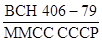

ВЕДОМСТВЕННЫЕ СТРОИТЕЛЬНЫЕ НОРМЫ
МОНТАЖ
ТЕХНОЛОГИЧЕСКОГО ОБОРУДОВАНИЯ
ОБОГАТИТЕЛЬНЫХ И АГЛОМЕРАЦИОННЫХ
ФАБРИК
ВСН 406-87
Минмонтажспецстрой СССР
МИНИСТЕРСТВО МОНТАЖНЫХ И СПЕЦИАЛЬНЫХ
СТРОИТЕЛЬНЫХ РАБОТ СССР
Москва 1988
РАЗРАБОТАНЫ Сибирским филиалом Гипрометаллургмонтажа (А. Е. Хлебников), исполнители В. П. Чурилин, Ю. И. Пивоваров, Г. П. Рябова и З.А. Гаризова.
ВНЕСЕНЫ И ПОДГОТОВЛЕНЫ К УТВЕРЖДЕНИЮ Главным техническим управлением Минмонтажспецстроя СССР
С введением в действие настоящих ВСН утрачивает силу "Инструкция по монтажу дробильного, размольного, сортировочного, обогатительного и агломерационного оборудования" ВСН 406-79/ММСС СССР.
СОГЛАСОВАНЫ с Минтяжмашем СССР
Начальник Главного технического управления - В. Т. Шатуров
Минчерметом СССР
Заместитель начальника Черметремонт - И. А. Иванов
|
Министерство монтажных и специальных строительных работ СССР (Минмонтажспецстрой СССР) |
Ведомственные строительные нормы |
ВСН 406-87 Минмонтажспецстрой СССР |
|
Монтаж технологического оборудования обогатительных и агломерационных фабрик |
Взамен  |
1.1. Настоящие ведомственные строительные нормы распространяются на основное технологическое оборудование обогатительных и агломерационных фабрик и устанавливают требования к его монтажу и индивидуальным испытаниям. Требования ВСН обязательны для проектных, общестроительных и специализированных монтажных организаций.
1.2. Настоящие нормы разработаны в развитие требований главы СНиП 3.05.05-84 в части норм монтажа основного технологического оборудования обогатительных и агломерационных фабрик и не заменяют инструкции по монтажу конкретного оборудования предприятий-изготовителей. ВСН не распространяются на устройства, механизмы и системы общего назначения (редукторы, муфты и другие), монтаж которых выполняют согласно требованиям специальных инструкций.
1.3. При проектировании и производстве монтажных работ, кроме требований настоящих норм, следует выполнять требования глав СНиП, стандартов и нормативных документов, приведенных в приложении 1, а также технической документации предприятие - изготовителей оборудования и руководствоваться "Правилами о договорах подряда на капитальное строительство" и "Положением о взаимоотношениях организаций генеральных подрядчиков с субподрядными организациями".
1.4. Монтажные работы должны выполнять специализированные организация, имеющие опыт монтажа данного оборудования.
1.5. Основным документом, определяющим организацию и последовательность строительно-монтажных работ при сооружении обогатительных и агломерационных фабрик, является проект организации строительства (ПОС), разработанный в составе основного проекта в соответствии со СНиП 3.01.01-85.
Технологическое оборудование следует монтировать согласно проекту производства работ (ППР), разработанному с учетом требований СНиП 3.05.05-84 и настоящих норм, согласованному и утвержденному в установленном порядке.
|
Внесены Главным техническим управлением Минмонтажспецстроя СССР |
Утверждены Минмонтажспецстроем СССР 28 сентября 1987 г. |
Срок введения с 1 января 1988 г. |
1.6. Оборудование на монтажную площадку должно поступать в полном соответствии c ГОСТ 24444-87, ОСТ 24.010.01-80, СНиП 3.05.05-84 и техническими условиями на изготовление и поставку.
Для изделий единичного и мелкосерийного производства, собираемых на месте эксплуатации, порядок поставки оборудования, монтажа, приемки и сдачи в эксплуатацию определяется ГОСТ 15.005-86.
1.7. Ревизию оборудования производят в случаях, предусмотренных СНиП 3.05.05-84, ГОСТ 24444-87 и техническими условиями, и в порядке, оговоренным "Положением c взаимоотношениях организаций генеральных подрядчиков с субподрядами организациями".
1.8. Оборудование, подлежащее монтажу, заказчик передает монтажной организации в соответствии со СНиП 3.05.05-84 в зоне производства монтажных работ.
1.9. Монтажной организации передается техническая документация в объеме, установленном СНиП 3.05.05-84, ОСТ 24.010.01-80, "Правилами о договорах подряда на капитальное строительство" и отраслевыми стандартами соответствующих министерств.
Техническую и проектно-сметную документацию, разработанные иностранной фирмой на иностранном языке, заказчик должен передавать переведенными на русский язык.
1.10. Техническая документация на выполнение строительно-монтажных работ должна быть выдана монтажной организации до 1 июля года, предшествующего планируемому, и иметь отметку заказчика о принятии к производству работ.
2.1. К началу производства работ по монтажу технологического оборудования генподрядчик должен выполнить касающиеся его подготовительные работы согласно СНиП 3.05.05-84, а также обеспечить энергоресурсами по постоянной или временной схеме, технологическими грузоподъемными средствами и монтажным оборудованием, предоставить мостовые краны и передаточные тележки, необходимые для производства монтажных работ в соответствии с ПОС и ППР.
2.2. Монтажная организация в период подготовки:
получает от генподрядчика техническую и проектно-сметную документацию и обрабатывает ее;
выдает задания на разработку ППР, рабочих чертежей металлоконструкций (КМД) и трубопроводов (КТД);
обеспечивает специализированную проектную организацию технической документацией согласно ВСН 319-77/ММСС СССР;
уточняет объемы предстоящих работ;
определяет потребность в прокате, трубах, материалах и оформляет заявки на их получение;
размещает на производственных базах и заводах заказы на изготовление трубопроводов и металлоконструкций;
комплектует объект подъемно-транспортным и сварочным оборудованием, слесарно-сборочным и контрольно-измерительным инструментами;
комплектует объект рабочими, ИТР и организует их техническую учебу;
принимает по акту технической готовности строительные конструкции для монтажа мостовых кранов;
принимает от заказчика оборудование по актам, а от генподрядчика и смежных организаций - фундаменты и опорные конструкций по актам с приложением исполнительных схем;
уточняет места складирования и пути подачи оборудования в монтажную зону, а при необходимости - работу стреловых и других кранов.
2.3. Фундаменты, здания и сооружения под монтаж оборудования принимают в соответствии с требованиями СНиП 3.05.05-84 по исполнительной схеме с указанием на ней проектных и фактических размеров и отметок. При приемке фундамента под машины с динамическими нагрузками должен быть приложен акт выполнения скрытых работ по виброизоляции в соответствии с проектом.
Отклонения при приемке опорных металлических конструкций не должны превышать значений, приведенных в СНиП III-18-75 "Металлические конструкции", раздел 2; табл. 12.
Отклонения при приемке фундаментов не должны превышать значений, приведенных в табл. 1.
Таблица 1
|
Размер допускаемого отклонения, мм |
|
|
От плоскостности на длине фундамента до 60 м |
20 |
|
В расположении фундаментных болтов: |
|
|
размеров (до 10 м), определяющих положение болтов в плане |
±5 |
|
высотной отметки (от репера высотой 3 м) |
20 |
|
выступающей части болта от вертикали |
1,5 |
|
Размеров (до 10 м), определяющих положение осей колодцев для болтов |
±20 |
|
Размеров колодцев в плане |
±20 |
|
Размеров (до 10 м), определяющих положение осей закладных деталей в плане |
±10 |
2.4. Расположение плашек и реперов на фундаментах для фиксирования осей и высотных отметок, необходимых для выверки оборудования, дается в схемах геодезического обоснования, разрабатываемых в ППР или в проекте производства геодезических работ. При разработке схем геодезического обслуживания следует руководствоваться требованиями СНиП 3.01.03-84 (приложение 2).
2.5. Геодезическое обоснование для монтажа оборудования, вынесенное на плашки и репера, передается монтажной организации генеральным подрядчиком актом с приложением исполнительной схемы.
3.1. К началу работ по монтажу технологического оборудования в цехе должны быть смонтированы и в установленном порядке сданы в эксплуатацию мостовые краны и передаточные тележки, предусмотренные ПОС и ППР для производства монтажных работ, и переданы в аренду монтирующей оборудование организации.
3.2. Обработанные сопрягаемые поверхности оборудования перед монтажом или сборкой необходимо очистить от консервирующих смазок и антикоррозионных покрытий. При наличии коррозии ее удалить в соответствии с ГОСТ 9.014-78.
Способы расконсервации должны быть указаны в инструкциях по монтажу предприятий-изготовителей.
3.3. Способы установки и выверки оборудования на фундаментах должны соответствовать требованиям ВСН 361-85/Минмонтажспецстрой СССР, СН 471-75, технической документации предприятий-изготовителей и "Руководства по креплению технологического оборудования фундаментными болтами".
3.4. Допускаемые отклонения на сборку и монтаж оборудования должны быть указаны в технической документации предприятия-изготовителя. При отсутствии таких указаний допускаемые отклонения не должны превышать значений, приведенных в настоящих нормах на соответствующее оборудование.
3.5. Опорная поверхность оборудования должна плотно прилегать к опорным элементам, регулировочные винты - к опорным пластинам, а постоянные опорные элементы (бетонные подушка, металлические подкладки и др.) - к поверхности фундамента.
3.6. Выверку смонтированного оборудования производят в плане, по высоте и на горизонтальность (вертикальность), допускаемые отклонения при выверке должны быть указаны в технической документации предприятия-изготовителя.
В плане оборудование выверяют относительно разбивочных осей, закрепленных на закладных элементах (плашках) в фундаментах, в соответствии со схемой геодезического обоснования, с проверкой на соосность относительно ранее смонтированного оборудования.
По высоте оборудование выверяют относительно реперов, закрепленных в фундаментах, либо относительно ранее смонтированного и выверенного оборудования.
3.7. Установочные поверхности (базы) и рекомендации по выверке оборудования должны быть указаны в технической документации предприятия-изготовителя в соответствии с ГОСТ 24444-87.
3.8. Выверку оборудования в зависимости от требуемой точности установки производят методами оптических измерений с помощью геодезических приборов, лазерных систем, с использованием измерительного инструмента и приспособлений - рулеток, поверочных линеек, гидростатических и рамных уровней, струн, отвесов и т.п.
3.9. Специальные инструменты, приспособления и приборы, необходимые для монтажа оборудования, поставляются предприятием-изготовителем в соответствии с ОСТ 24.010.01-80 и согласованными монтажной организацией техническими условиями.
3.10. Присоединение пылепроводов и коробов к корпусам мельниц, сепараторов, аглоэксгаустеров и других машин следует выполнять так, чтобы они не испытывали нагрузок от их масс. Перекос фланцев не допускается.
3.11. Смещение осей подающих и отводящих течек, воронок и бункеров от осей машин или от их приемных и выходных отверстий не должно превышать 3 мм.
Зазор между машинами, подверженными вибрации, течками, воронками, бункерами должен определяться проектом, но быть не менее 45...50 мм. Характер и конструкция уплотнения зазора должны быть определены проектом.
4.1. Дробилки, поставляемые крупными узлами, должны иметь фиксирующие элементы и сборочные риски, которые наносят на видном месте набивкой ударным способом и обозначают несмываемой краской. При монтаже необходимо соблюдать маркировку предприятия-изготовителя. Особое внимание обратить на сохранность прокладок, которые применяли при сборке дробилки на предприятии-изготовителе и которые должны быть установлены при монтаже. Трубопроводы систем смазки поставляют узлами. Внутренние поверхности трубопроводов должны быть очищены химическим путем, свободные концы труб закрыты специальными пробками.
4.2. Монтаж дробилок, поступающих в собранном виде, заключается в установке их на фундаменты и выверке в плане и по высоте.
Монтаж дробилок, поставляемых в разобранном виде укрупненными блоками, выполняют в соответствии с инструкциями по монтажу предприятий-изготовителей и схемами монтажно-сборочной маркировки.
4.3. При установке дробилок отклонения от проектных размеров и размеры допусков не должны превышать значений, указанных в рабочих чертежах и инструкциях предприятий-изготовителей. При отсутствии их отклонения от проектных размеров не должны превышать значений, указанных в табл. 2.
Таблица 2
|
Значения допускаемых отклонений, мм |
||
|
конусные |
щековые, ударные, валковые |
|
|
Горизонтальность (на 1 м): |
||
|
в поперечном направлении |
0,1 |
0,1 |
|
в продольном направлении |
0,1 |
0,5 |
|
Перекос относительно основных осей |
0,5 |
0,5 |
|
Установка по высоте |
±5 |
±5 |
4.4. Последовательность сборки и монтажа щековых дробилок:
сборка, установка и выверка станины на фундаменте, ее подливка;
установка подвижной щеки и укладка внутрь рамы распорных плит;
монтаж заднего упора, главного вала и фрикционных муфт;
установка на место распорных плит;
монтаж замыкающих пружин, привода, системы смазки и охлаждения.
4.5. При соединении нижней и верхних частей станины соединительные болты затягивают с подогревом до температуры 150 °С.
4.6. Для обеспечения диаметрального зазора при монтаже подвижной щеки в подшипнике устанавливают регулировочные прокладки, подобранные и маркированные на предприятии-изготовителе. На монтаже зазор контролируют свинцовыми оттисками.
4.7. При установке распорных плит необходимо проверить затяжку пружин замыкающего устройства, обеспечивающих плотный контакт распорных плит и сухарей, их неприлегание не должно превышать 0,1 мм на 1 м. Масляные карманы распорных плит при монтаже заполняют густой смазкой.
Установка заднего упора дробилки
1 - кронштейн; 2 - шпонка; 3 - регулировочные прокладки; 4 - обойма; 5 - болт
Черт. 1
Схема выверки рамы щековой дробилки
I-IV - положения уровня при выверке; 1 - поверочная линейка; 2 - уровень
Черт. 2
4.8. Последовательность монтажа заднего упора (черт. 1):
устанавливают кронштейн на шпонках и крепят его болтами. Во избежание самоотвинчивания головки болтов попарно связывают мягкой проволокой;
устанавливают обойму, предварительно смазав ее густой смазкой. Торец обоймы не должен выступать за внутреннюю поверхность задней стенки рамы. При установке болтов зазор между ними и задним упором должен соответствовать инструкции предприятия-изготовителя.
4.9. Выверку дробилки производить на установочных винтах, принимая за базы риски главных осей на станине и расточки подшипников главного вала. Горизонтальность станины необходимо проверять с помощью нивелира по продольной оси, уровня и поверочной линейки по оси главного вала (черт. 2).
4.10. При монтаже вала проверяют отсутствие масла на фрикционных дисках, при необходимости диск следует обезжирить. Пружины фрикционных муфт равномерно без перекоса затягивают до размера, указанного на рабочей документации.
4.11. Дробилки должны быть снабжены специальными устройствами и приспособлениями для монтажа, поставляемыми вместе с дробилками. Для складирования дробящих конусов на монтажной площадке должны быть предусмотрены специальные стенды.
4.12. При монтаже базами дробилки на фундаменте являются:
горизонтальные оси станины в плане, в том числе ось приводного вала и ведомого шкива;
вертикальная ось корпуса дробилки;
горизонтальная ось ведущего шкива;
ось клиноременной передачи, перпендикулярная оси приводного вала. Допускаемые отклонения при установке дробилки указаны в табл. 3.
Таблица 3
|
Отклонение |
Значение допускаемого отклонения, мм |
|
|
Станины от горизонтальной плоскости (на 1 м) |
0,1 |
|
|
Приводной вал и привод |
Осевой люфт приводного вала |
0,5...0,8 |
|
Перекос вала ведомого шкива и приводного (на 1 м) |
0,5 |
|
|
Радиальное смещение осей валов |
0,25 |
|
|
Точность центровки электродвигателя с валом шкива |
0,15 |
|
|
Осевой люфт вала ведущего шкива |
0,4...0,5 |
|
|
Непараллельность валов ведущего шкива и ведомого на длине шкива не более |
5 |
|
|
Эксцентрик |
Точность взаимного прилегания колец на краску (на 2 см2) |
1 пятно |
4.13. Станину дробилки закрепляют на фундаменте четырьмя шпильками и анкерными плитами.
Выверяют станину в горизонтальной плоскости уровнем по торцу центрального станка (черт. 3).
При установке станины зазор (мм) между подошвой станины (плиты) и фундаментом должен быть:
для дробилок ККД-500/75; ККД-900/140; КРД-700/100 - 50...70;
для дробилок ККД-1200/150; ККД-1500/180 - 80...100.
После выверки производят подливку станины.
4.14. Перед установкой эксцентрика в центральный стакан станины проверяют состояние внутренней поверхности втулки, крепление верхнего кольца эксцентрика к зубчатому колесу и прочищают на нем маслопроводящие пазы. При установке эксцентрика в нижнюю часть корпуса (черт. 4) следить, чтобы зубья колеса без удара вошли во впадины шестерни приводного вала, при этом радиальный зазор Б и зазор А должны соответствовать значениям, приведенным в табл. 4.
Схема выверки станины дробилки
1 - отвес; 2 - поверочная линейка; 3 - струна; 4 - уровень
Черт. 3
Таблица 4
|
Значение зазора, мм, для дробилки |
|||||
|
ККД-500/75 |
ККД-900/140 |
ККД-1200/150 |
ККД-1500/180 |
КРД-700/100 |
|
|
Б |
4 + 2 |
4,5 + 2 |
6 + 2 |
6 + 2 |
6 + 2 |
|
А |
5 + 1 |
5 + 1 |
6 + 2 |
8 + 2 |
8 + 2 |
4.15. При установке дробильной чаши, состоящей из двух колец, каждое кольцо отдельно футеруют и в собранном виде устанавливают в дробилку. Расклинку броней и заливку цементным раствором производить в соответствии с инструкцией предприятия-изготовителя.
Эксцентрик и зубчатая передача
1 - коническая шестерня; 2 - станина; 3 - регулировочная прокладка; 4 - нижнее кольцо; 5 - среднее кольцо; 6 - верхнее кольцо; 7 - патрубок уплотнения; 8 - зубчатое кольцо
Черт. 4
При сборке колец корпуса дробильной чаши с коническими посадочными поверхностями затяжку фланцевых болтов производят равномерно по всему периметру, не допуская перекоса. Равномерность и правильность затяжки контролируют по зазору между фланцами. Допускаемая разность зазоров: для дробилки ККД-500/75, ККД-900/140, КРД-700/100 - 2 мм; для дробилок ККД-1200/150, ККД-1500/180 - 3 мм.
4.16. При сборке колец дробильной части, соединяемых по цилиндрическим посадочным поверхностям, по стыку фланцев устанавливают штифты. Гайки затягивают с помощью гидродомкратов, поставляемых с дробилкой или с помощью лебедки грузоподъемностью 3...5 т.
4.17. Дробящий конус можно устанавливать в дробилку вместе с траверсой или раздельно. Дробящий конус с траверсой собирают на специальном стенде (черт. 5). При опускании конуса в дробилку во избежание зависания конуса и повреждения узлов не допускается опирание сферической шайбы уплотнения на верхний торец патрубка уплотнения станины. Опорный подшипник траверсы обильно смазать, проверив поступление смазки от станции к конусной втулке.
4.18. В дробилках с гидравлическим регулированием щели смонтировать рельсовый путь для монтажа и демонтажа гидроцилиндра.
4.19. Гидравлический цилиндр можно монтировать вместе со станиной или раздельно. Монтаж гидроцилиндра производят с помощью рельсового пути, поставляемого комплектно с дробилкой. Перед монтажом состояние рабочих наружных поверхностей резинотканевых уплотнений проверяют визуально.
4.20. Гидроагрегат и смазочную установку поставляют потребителю в собранном виде. При монтаже пользуются соответствующими инструкциями и руководствами на это оборудование, входящими в комплект монтажной и эксплуатационной документации.
Дробящий конус с траверсой на стенде
1 - дробящий конус; 2 - траверса; 3 - гайка подвеса, 4 - рым-болт; 5 - подкладка; 6 - деревянный брус; 7 - место установки подкладок
Черт. 5
4.21. Станину дробилки устанавливают на фундамент, выверяют с помощью установочных стальных клиньев. Выверку станины производят с помощью уровня в двух взаимно перпендикулярных направлениях, базируясь на опорную поверхность под опорную чашу (черт. 6). После выверки и крепления производят подливку станины.
Выверка станины
1 - броня ребра; 2-шпонка; 3 - линейка; 4 - уровень; 5 - станина; 6 - броня привода; 7 - втулка
Черт. 6
Контроль положения шестерни приводного вала
1 - определение зазора с помощью шаблона
Черт. 7
4.22. Перед установкой опорного блока с упорной резьбы следует снять консервирующее покрытие, тщательно осмотреть резьбу и устранить повреждения. Для равномерной затяжки болты следует нагреть с помощью электронагревателя.
4.23. При монтаже приводного вала установить между средним фланцем корпуса приводного вала и патрубком станины поставляемые с дробилкой прокладки. Контроль положения шестерни приводного вала осуществлять с помощью шаблона (черт. 7). Шаблон изготавливают в соответствии с базовыми размерами, приведенными в табл. 5.
Таблица 5
|
Д |
Н |
А |
Б |
|
1020A3 |
25 |
1509 |
489 |
4.24. Устанавливают электродвигатель. Выверку производят по обработанным поверхностям опорных платиков с обеспечением их горизонтальности.
4.25. Перед монтажом эксцентрика устанавливают нижнюю крышку станины с дисками подпятника и прокладками, присланными предприятием-изготовителем. Эксцентрик монтируют с помощью специальных приспособлений, поставляемых с дробилкой, согласно руководству по эксплуатации предприятия-изготовителя. При опускании эксцентрика в дробилку следят за тем, чтобы зуб колеса без удара попал во впадину между зубьями шестерни. Для правильной настройки зубчатого зацепления эксцентрика проследить, чтобы все регулировочные прокладки, поставленные при заводской сборке, были полностью установлены при монтаже в соответствии с заводской маркировкой.
4.26. В случае плотной посадки опорной части в станину допускаются несквозные клиновые зазоры с раскрытием до 0,2 мм и глубиной до 120 мм и сквозные с раскрытием до 0,2 мм, общей длиной не более 1/4 окружности. Плотность стыка опорной чаши со станиной проверяют щупом.
4.27. Перед монтажом дробящего конуса проверяют надежность крепления брони, в случае ослабления крепления производят дополнительную подтяжку специальным приспособлением, поставляемым с дробилкой. При опускании дробящего конуса, чтобы не повредить воротник гидравлического затвора, оттянуть дробящий конус в сторону противовеса на зубчатом колесе.
4.28. Монтаж противопылевого устройства, гидравлического затвора и системы смазки производят, руководствуясь указаниями инструкции предприятия-изготовителя.
4.29. Допускаемые отклонения при монтаже дробилки должны соответствовать значениям, указанным в табл. 6.
Таблица 6
|
Отклонение |
Значение допускаемого отклонения, мм |
|
|
Электродвигатель с полумуфтой |
Горизонтальность станины во взаимно перпендикулярных направлениях (на 1 м) |
0,1 |
|
Перекос валов на длине 1 м, не более |
0,5 |
|
|
Радиальное смещение осей, не менее |
0,25 |
|
|
Эксцентрик |
Радиальный зазор между зубьями у внешних торцов |
6...8 |
4.30. Последовательность монтажа дробилок, поставляемых предприятиями-изготовителями отдельными комплектными блоками:
устанавливают и подливают станину (при наличии фундаментных плит их устанавливают и подливают перед установкой станины);
устанавливают узел приводного вала, диски подпятника и вал-эксцентрик, проверяют зубчатое зацепление, затем устанавливают опорную чашу, дробящий конус, устройство регулирования щели, регулирующее кольцо с кожухом, загрузочное устройство и привод;
параллельно монтируют системы смазки и охлаждения, систему подвода воды в противопылевое гидроуплотнение. Схемы строповки станины и узлов показаны на черт. 8 и 9.
4.31. Станину дробилки устанавливают на фундамент или фундаментные плиты в сборе с опорным кольцом и амортизирующими пружинами.
4.32. При выверке дробилки за установочную базу принимают обработанную поверхность под опорную чашу и осевые метки на станине (черт. 10).
4.33. При установке дробилки на фундаментные плиты последние выверяют на клиновых подкладках отдельно от станины. В комплект входят две плиты.
Обработанные поверхности обеих плит должны находиться в одной плоскости. Допускаемое отклонение не более 0,3 мм на длине обработанной верхней части плиты и между плитами. После выверки плит на них устанавливают станину. Сквозные зазоры между подошвой станины и привалочными поверхностями плит не допускаются. Допускаемые местные зазоры до 0,3 мм (черт. 11).
4.34. При установке приводного вала проверяют соответствие осевого хода вала осевому ходу, указанному в рабочем чертеже, и соответствие толщины набора регулировочных прокладок заводской маркировке, выбитой на фланце станины.
4.35. Положение приводного вала относительно станины фиксируют штифтом, который обеспечивает правильное расположение смазочных канавок бронзовых подшипниковых втулок.
Схемы строповки
а - станины в сборе; б - дробящего конуса.
Черт. 8
Схемы строповки узлов дробилки
а - вала-эксцентрика; б - опорной чаши; в - приводного вала
Черт. 9
Установка и выверка станины
1 - фундаментная плита; 2 - пружина; 3 - рукав уплотнения; 4 - опорное кольцо; 5 - линейка; 6 - уровень; 7 - цилиндрическая втулка; 8 - станина
Черт. 10
4.36. Конусный диск, обеспечивающий плотную посадку приводного вала в передней опоре, после проверки правильности зубчатого зацепления необходимо затянуть.
4.37. Во избежание загрязнения опорных поверхностей и подпятника вала-эксцентрика до монтажа его дисков окончательно промывают ванну станины.
4.38. При монтаже дисков подпятника необходимо в соответствии с паспортом на дробилку установить прокладки регулирования зубчатого зацепления. При этом штифты, запрессованные в крышке, должны обязательно попасть в отверстия нижнего диска. Устанавливать диски подпятников эксцентрика, а также эксцентрик следует с помощью приспособлений, поставляемых предприятием-изготовителем.
4.39. Опорную чашу до монтажа тщательно промывают, каналы для слива масла, подвода и отвода жидкости из уплотнения прочищают. Чтобы обеспечить правильный заход чаши в посадочное отверстие на станине, выставить чашу горизонтально с помощью уровня и линейки с базой на верхнюю кромку сферического подпятника либо по равномерному зазору между торцами опорной чаши и станины.
Схема выверки фундаментных плит
1 - поверочная линейка; 2 - уровень; 3 - фундаментная плита; 4 - отвес; 5 - струна; 6 - репер; I-IV - положения уровня
Черт. 11
4.40. Чтобы облегчить запрессовку, запрещается дополнительная обработка посадочных поверхностей. При посадке чаши следят, чтобы шпонка станины совпала с лыской на корпусе чаши.
4.41. Проверяют работу гидравлического пылевого уплотнения.
4.42. Дробящий конус перед монтажом необходимо промыть и осмотреть конусную поверхность вала, сферическую поверхность корпуса конуса и каналы для подвода смазки, выполненные в валу и корпусе конуса.
Перед монтажом дробящего конуса необходимо убедиться в надежности посадки брони, при необходимости производят подтяжку с помощью имеющегося на конусе крепления.
4.43. При опускании дробящего конуса в дробилку руководствоваться следующими указаниями:
при опускании необходимо дробящий конус слегка оттянуть в сторону противовеса на зубчатом колесе;
при опускании и подъеме дробящего конуса должен быть зазор;
вал дробящего конуса должен скользить вниз, соприкасаясь с конусной втулкой эксцентрика.
4.44. Перед монтажом механизма поворота регулирующего кольца производят наружную расконсервацию и ревизию деталей, после чего механизм устанавливают на дробилку.
4.45. Перед монтажом регулирующего кольца проверяют плотность затяжки броней. Одновременно проверяют целостность уплотнительного рукава опорного кольца и закладывают густую смазку в его резьбу. Регулирующее кольцо монтируют в сборе с кожухом. При разворачивании регулирующего кольца контролируют правильность положения уплотнительного рукава в канавке опорного кольца.
4.46. Перед установкой эластичных элементов муфты производят центровку электродвигателя с дробилкой.
4.47. Монтаж системы смазки проводят одновременно со сборкой механической части согласно инструкции предприятия-изготовителя.
4.48. Ударные дробилки, поставляемые в сборе, монтируют, принимая за базу обработанные поверхности ротора или установочные площадки на их корпусах. Монтаж производят без разборки, ревизии и расконсервации согласно ГОСТ 24444-87.
4.49. Приводы дробилок, соединяемые с дробилками карданными валами, выверяют по установочным базам двигателя и редуктора на раме с точностью, равной точности установки дробилки.
4.50. Негабаритные молотковые дробилки с подвижной плитой монтируют укрупненными сборочными единицами в такой последовательности: корпус, подвижная плита, ротор, подвижный транспортер, приводы ротора, транспортера и плиты.
4.51. При выверке корпуса за базу принимают обработанные поверхности под подшипники ротора.
4.52. При сборке сопрягаемые поверхности верхней и нижней частей корпуса необходимо уплотнить жидким стеклом или бакелитовым лаком. После установки подвижного полотна проверяют его подвижность в пределах регулирования разгрузочной щели.
4.53. При установке ротора проверяют его горизонтальность и при необходимости устанавливают под подшипники ротора прокладки толщиной 0,05...0,7 мм. Осевой разбег подшипника ротора с неприводной стороны должен составлять 8…12 мм в обе стороны.
4.54. Предприятия-изготовители поставляют дробилки с отбалансированным ротором.
При монтаже билы ротора допускается заменять только комплектными билами согласно маркировке. При замене молотков в молотковых дробилках разница суммарных масс каждого ряда не должна превышать 35 т.
4.55. Установку дробилки и привода производят на подкладках с выверкой по уровню.
4.56. После затяжки фундаментные болты подливают цементным раствором.
4.57. После выверки рамы и проверки соосности и перекоса валов производят установку валов шпинделей и затяжку фундаментных болтов.
4.58. Отклонения от проектных размеров не должны превышать значений, указанных в табл. 7.
Таблица 7
|
Значение допускаемого отклонения, мм |
|
|
Перекос валов редуктора и дробилки |
1° |
|
Радиальное смещение валов |
1 |
|
Перекос быстроходного вала и вала электродвигателя, соединяемых втулочно-пальцевой муфтой |
0,7 на длине 250 мм |
|
Радиальное смещение |
0,08 |
5.1. Монтаж мельниц производят в такой последовательности:
фундаментные плиты подшипников;
главные подшипники;
барабан мельницы;
узлы привода с электродвигателем;
кожуха, ограждения;
смазочное оборудование.
5.2. Выверку мельниц на фундаментах производят на стальных подкладках, которые остаются в качестве постоянных несущих опорных элементов после подливки, выверенного оборудования в соответствии с инструкциями предприятий-изготовителей.
5.3. Подшипниковые опоры мельниц монтируют в такой последовательности:
устанавливают на клиновые или плоские подкладки фундаментные плиты (черт. 12);
Схема установки и выверки фундаментных плит подшипников
1 - уровень; 2 - плоскость верха плит; 3 - подливка
Черт. 12
устанавливают корпуса подшипников;
проверяют прилегания сферической поверхности корпуса подшипника к сферической поверхности опорной плиты и баббитовой поверхности вкладыша к цапфам барабана (при необходимости пришабривают).
Прилегание баббитовых поверхностей вкладышей к цапфам окончательно проверяют укладкой и поворачиванием барабана с помощью мостового крана. Прилегание поверхностей - не менее трех пятен контакта на площади 25 ´ 25 мм по дуге не менее 90°. После проверки правильности установки барабана мельницы крышки подшипников должны быть закрыты.
5.4. При монтаже мельниц корпус "плавающего" коренного подшипника устанавливают так, чтобы обеспечить перемещение цапфы в пределах 15 мм для компенсации температурных воздействий. Радиально-упорный коренной подшипник устанавливают со стороны привода.
5.5. Барабан мельницы следует опускать на подшипники плавно, чтобы не повредить баббитовый слой.
5.6. Барабан мельницы с торцевыми крышками следует собирать на козлах или шпальной выкладке (черт. 13).
Барабан мельницы объемом 140 м3 и выше собирают на месте установки.
5.7. Допускаемые отклонения от проектных размеров при установке мельницы приведены в табл. 8.
5.8. При строповке барабана цапфы подшипников необходимо предохранять от повреждения.
Схема сборки барабана мельницы с торцевыми крышками
1 - шпалы; 2 - козлы
Черт. 13
5.9. При сборке барабана с торцевыми крышками проверяют совпадение обозначений маркировки. Разъемы фланцев предварительно покрывают слоем сурика. Прецизионные болты должны быть плотно и равномерно затянуты.
Таблица 8
|
Значение допускаемого отклонения, мм |
|
|
Взаимное смещение фундаментных плит (рам) подшипников: |
|
|
по высоте, не более |
1 |
|
параллельность относительно основных осей |
±1 |
|
Перекос плит относительно их осей (на 1 м) |
0,5 |
|
Отклонение плит от горизонтальности (на 1 м) |
0,2 |
|
Установка барабана в подшипники: |
|
|
отклонение оси от горизонтальности (на 1 м) |
0,2 |
5.10. До окончательной установки барабана мельницы на подшипники необходимо смонтировать и испытать на плотность систему водяного охлаждения подшипников, кроме мельниц мокрого измельчения.
5.12. После выверки положения оси мельницы в вертикальной и горизонтальной плоскостях проверяют равномерность зазоров В и Г между торцевыми поверхностями баббитовой заливки вкладыша радиального подшипника и буртами шейки цапфы "плавающего" подшипникового узла (черт. 14). Разница между зазорами В и Г не более 3 мм.
Выверка подшипника
Черт. 14
5.13. Зацепление зубчатого венца и шестерни следует контролировать по ГОСТ 1643-81 "Передачи зубчатые цилиндрические". В горизонтальной плоскости зацепление регулируют путем перемещения корпуса приводного вала по фундаментной плите с помощью специальных регулировочных винтов, а в вертикальной - установкой стальных клиньев и подкладок под фундаментную плиту.
5.14. Горизонтальность барабана мельницы проверяют в четырех положениях, каждый раз поворачивая его на 90°. Проверку выполняют с помощью гидростатического уровня с микрометрической головкой, установленного на цапфы подшипников, отклонения не более 0,2 мм на 1 м.
5.15. Уплотнения подшипниковых узлов должны плотно прилегать по всей окружности цапф.
5.16. В смонтированной футеровке мельницы головки крепежных болтов должны быть утоплены в гнезда, а плиты должны плотно прилегать к корпусу мельницы через резиновые прокладки и надежно закреплены.
5.17. Подшипниковые опоры и барабан мельницы следует монтировать согласно пп. 5.1 - 5.14 настоящей инструкции.
5.18. После проверки правильности установки барабана выверяют его зубчатый венец на радиальное и торцевое биение. Радиальное биение не должно превышать 1 мм, а осевое - 1,5 мм.
5.19. Кольцевые зазоры между бронеплитами барабана и торцом крышки или решетки прокладывают резиной, а зазоры между элеваторами и торцевой стенкой при монтаже заливают цементным раствором согласно инструкции предприятия-изготовителя.
5.20. При монтаже входного и выходного патрубков в мельницах, работающих с теплоносителем, необходимо проверить плотность прилегания асбестовой набивки торцевого уплотнения к кольцу втулки полой цапфы; зазоры не допускаются.
5.21. Подшипниковые опоры и барабан мельницы монтируют в соответствии с пп. 5.1 - 5.14 настоящей инструкции.
5.22. При установке междукамерных перегородок барабана уширенная часть их щелей должна быть направлена в сторону разгрузки; зазоры между секторами перегородок и бронефутеровкой должны соответствовать зазорам, указанным в рабочих чертежах.
5.23. Под бронефутеровку и секторы перегородок укладывают прокладки из резины, асбеста, сукна или других материалов.
5.24. Кольцевые зазоры между корпусом, торцом крышек, трубошнеком и торцевой футеровкой залить цементным раствором согласно инструкции предприятия-изготовителя.
5.25. При необходимости положение загрузочной течки на фундаменте изменяют с помощью установочных винтов. Дно течки для защиты от износа заливают цементным раствором.
5.26. Разгрузочный патрубок устанавливают по маркировочным рискам; сито устанавливают на разгрузочный патрубок.
5.27. При монтаже приемной камеры необходимо обеспечить свободное вращение (без заеданий) сита и разгрузочного патрубка. Уплотнение должно быть плотно прижато к вращающимся поверхностям разгрузочного патрубка.
Таблица 9
|
Значение допускаемого отклонения, мм |
|
|
Смещение оси течки от оси мельницы, не более |
5 |
|
Неперпендикулярность оси фланца относительно оси мельницы (на 1 м), не более |
1 |
|
Торцевое биение сита, не более |
20 |
|
Параллельное смещение оси редуктора от оси мельницы, не более |
3 |
|
Отклонение осей редуктора от горизонтальности на 1 м, не более |
0,5 |
|
Перекос осей редуктора на 1 м, не более |
1 |
5.28. Редуктор главного привода устанавливают с проверкой его высотной отметки и отклонений от проектных осей и горизонтальности.
Для компенсации износа коренных подшипников ось редуктора устанавливают на 4 мм (отклонение ±1 мм) ниже оси мельницы.
5.29. Допускаемые отклонения при установке мельницы приведены в табл. 9.
5.30. При установке поддона редуктора сопрягаемые поверхности необходимо уплотнить пастой "Герметик" или бакелитовым лаком.
5.31. Мельницы монтируют в такой последовательности:
устанавливают корпус мельницы, центрируя его с ротором;
производят подливку рам, устанавливают корпус сепаратора вместе с обслуживающими площадками и приваривают предохранительные клапаны;
собирают на болтах верхнюю часть сепаратора и внутри проваривают стыки фланцевого соединения сепаратора с мельницей, на верхней части сепаратора устанавливают кронштейны с тягами, проверяют плавность поворота регулировочных лопаток до крайних положений, присоединяют течку подачи сырья, пылевоздухопроводы, трубопроводы сжатого воздуха, пара и воды.
5.32. При монтаже мельницы за базовые поверхности принимают обработанные поверхности ротора и верхнего фланца корпуса.
5.34. Между корпусом мельницы и сепаратором необходимо установить паронитовую прокладку, смазанную жидким стеклом или суриком.
5.35. При сборке фланцевых соединений и пылевоздухопроводов устанавливают асбестовые прокладки. Резьбу крепежных изделий смазывают графитной смазкой по ГОСТ 5656-85 "Смазка графитная БВН-1".
5.36. Допускаемые отклонения от горизонтальности при монтаже мельниц приведены в п. 5.33 настоящей инструкции.
5.37. Если проектом предусматривается установка корпуса мельницы с разворотом на угол 180° против заводской сборки, то при монтаже перекос стыкуемых плоскостей нижней и средней частей корпуса не должен превышать 0,75 мм.
5.38. Перед испытанием мельницы необходимо проверить:
наличие уплотнений в местах прохода валков через корпус мельницы;
соответствие рисок на шкале указателя пружинных блоков начальному и рабочему сжатию пружин;
равномерность зазоров между валками и столом (3...8 мм);
уплотнения подшипников размольных валков (при подаче в подшипники масла под давлением 0,05...0,1 МПа оно не должно выдавливаться через уплотнения). Уплотнения проверяют под давлением в течение 15 мин.
5.39. Подшипниковые опоры и барабан мельницы монтируют в соответствии с пп. 5.1 - 5.9 и 5.11 - 5.16 настоящей инструкции.
5.40. Установку фундаментных рам производят на пакетах стальных подкладок. Окончательное положение фундаментных рам определяют после выверки барабана в сборке с футеровкой и зубчатым венцом. Подливку фундаментных рам производят после окончательной установки и выверки мельницы и закрепления рам фундаментными болтами.
Монтаж приводной шестерни
1 - зубчатый венец; 2 - корпус; 3 - отжимные болты; 4 - рама привода, 5 - деревянные прокладки; 6 - уровень заливки бетона; 7 - сторона барабана; 8 - шестерня
Черт. 15
5.41. Барабан мельницы собирают на двух опорах с помощью приспособлений для его подъема, установленных на фундаменте на гидравлических домкратах. Перед установкой корпусов подшипников проверяют пришабровку их сферических поверхностей по бликам, после чего сферические поверхности обильно смазывают солидолом. Устанавливают корпуса подшипников с проверкой прилегания сферической поверхности корпуса подшипника к сферической поверхности опорной плиты. Совмещение оси барабана с осью подшипников обеспечивается перемещением в нужную сторону опорных плит отжимными болтами. При установке зубчатого венца руководствоваться заводской маркировкой. При установке загрузочной и разгрузочной втулок контрольные риски на цапфах и втулках должны совпадать. После монтажа футеровки барабана проверяют радиальное и торцевое биение цапф и зубчатого венца.
5.42. При монтаже приводной шестерни следят, чтобы между стенками рамы и корпуса привода со стороны зубчатого венца был зазор 20 мм. После установки приводной шестерни в зазор вставить деревянные прокладки (черт. 15). После выверки и закрепления установки приводной шестерни производят заливку рамы привода бетонным раствором, монтируют кожух зубчатого венца и на него устанавливают детали густой автоматической смазки.
5.43. После окончательной выверки и подливки приводной шестерни выполняют монтаж главного привода, затем монтаж вала вспомогательного привода и загрузочного устройства.
5.44. Допускаемые отклонения при монтаже мельниц приведены в табл. 10.
Таблица 10
|
Отклонение |
Значение допускаемого отклонения, мм |
|
|
Фундаментная плита |
Размеров привязки осей рамы в горизонтальной плоскости |
±5 |
|
Высотных отметок рам по отношению друг к другу, не более |
1,0 |
|
|
Смещение осей отверстий рамы относительно осей фундаментных болтов, не более |
5,0 |
|
|
Плит от горизонтальности (на 1 м) |
0,2 |
|
|
Подшипники скольжения |
Степень прилегания сферической поверхности корпуса подшипника к сферической поверхности опорной плиты, не менее |
1 пятно на площади 6,25 см2 |
|
Степень прилегания поверхности баббитовой заливки корпусов подшипников к цапфам барабана, не менее |
1 пятно на площади 2 см2 |
|
|
Предельное смещение подшипников от продольной оси мельницы |
± 0,5 |
|
|
Сумма осевых зазоров между буртами цапфы и корпусом опорно-упорного подшипника, не более |
3,0 |
|
|
Зазор между опорными поверхностями опорной и фундаментной плит, не более |
0,2 |
|
|
Зубчатый венец |
Зазор в разъемах венца (местный), не более |
0,12 |
|
Торцевое биение венца, не более |
2 |
|
|
Радиальное биение венца, не более |
2 |
|
|
Периметр прилегания разъемов зубчатого венца, не менее |
95 % |
|
|
Привод |
Радиальный зазор между вершиной зуба приводной шестерни и впадиной зуба венца |
7 + 2 |
|
Боковой зазор |
1,7…2,5 |
|
|
Пятна контактов зубчатой пары: |
||
|
по длине зуба, не менее |
60 % |
|
|
по высоте зуба, не менее |
40 % |
|
|
Вспомогательный привод |
Радиальное биение зубчатого венца, не более |
0,4 |
|
Торцевое биение зубчатого венца, не более |
0,3 |
|
|
Радиальный зазор между вершиной зуба шестерни и впадиной зуба колеса |
7 + 2 |
|
|
Перекос осей быстроходного вала редуктора и электродвигателя (на 1 м длины) |
0,2 |
|
|
Радиальное смещение осей валов |
0,1 |
|
|
Перекос оси тихоходного вала редуктора и оси установки приводной шестерни (на 1 м длины) |
0,5 |
|
|
Радиальное смещение осей валов |
0,3 |
5.45. Допускаемые отклонения при монтаже вальцов должны соответствовать значениям, приведенным в табл. 11.
Таблица 11
|
Значение допускаемого отклонения, мм |
|
|
Горизонтальность валков и оси привода (на 1 м) |
0,2 |
|
Параллельность осей гладкого и винтового валков (на 1 м) |
0,3 |
|
Осевые зазоры между сухарями с полумуфтами привода |
2 |
5.46. При опробовании вальцов перед включением электродвигателя вручную проверяют легкость вращения и отсутствие заеданий валков.
6.1. Равномерное распределение массы грохота на все опоры или подвески проверяется одинаковой осадкой опорных пружин.
6.2. Зазор между движущимися частями грохота и неподвижными конструкциями (воронки, желоба и т.д.) должен соответствовать зазору на рабочем чертеже.
6.3. Длины подвесок подвесных грохотов должны быть попарно равны между собой; допускаемая разность длин подвесок 2 мм. Приварка к коробу грохота монтажных скоб, распорок и т.д. не допускается.
6.4. Поверхности конструкций, на которые устанавливают опорную раму грохота, должны быть ровными. Отклонение поверхности от горизонтальности не должно превышать 0,5 мм на 1 м. Удары при проходе резонанса грохота не допускаются.
6.5. При монтаже вибровозбудителей и промежуточного вала риски на парных зубчатых колесах должны находиться на одной прямой, штифты с соответствующими им отверстиями в полумуфтах вибровозбудителей и промежуточного вала должны быть совмещены, а дебалансы на обоих вибровозбудителях должны занимать одинаковое положение.
6.6. В самосинхронизирующихся грохотах проверяют правильность сборки валов покачиванием от руки. Правильно собранный вибратор должен совершать не менее 5...7 качаний вокруг оси подшипников.
6.7. При установке грохотов отклонения их рам от горизонтальности не должны превышать 0,5 мм на 1 м, угла наклона барабанов и цилиндров от проектного - 0,2°.
6.8. При монтаже зазоры между опорными поверхностями бандажей барабана и опорными роликами не должны превышать 0,1 мм на длине, равной 50 % длины ролика или ширины бандажа, между торцевыми поверхностями бандажей и упорными роликами зазор допускается 2...3 мм.
6.9. Осевое биение опорных поверхностей барабана не должно превышать 5, радиальное - 1,5 мм.
6.10. Грохоты испытывают вхолостую в течение 2 ч непрерывной работы. Результаты испытаний признаются удовлетворительными, если амплитуда колебаний подвижных рам соответствует проектному значению.
6.11. При установке сепаратора на фундамент отклонение его от горизонтальности не должно превышать 0,5 мм на 1 м.
6.12. Сепараторы монтируют в такой последовательности:
на фундамент устанавливают сепаратор;
проверяют горизонтальность барабанов (черт. 16) и лотка-питателя;
Схема выверки магнитного барабанного сепаратора
Черт. 16
монтируют питающее устройство и устройство для отвода продуктов сепарации;
в рабочее положение устанавливают магнитные системы барабанов и монтируют системы отсоса пыли.
6.13. При монтаже необходимо проверить и отрегулировать:
легкость вращения барабана;
плотность закрывания крышек люков;
натяжение ремней и цепей;
плотность затяжки рычага кривошипно-шатунного механизма на оси качающегося лотка-распределителя;
надежность закрепления заслонки при установке зазора между ней и дном загрузочного короба;
устройство изменения расстояния между питающим лотком и барабаном;
наличие масла в редукторе и смазки в подшипниках барабана.
6.14. Сепараторы для мокрого обогащения монтируют в такой последовательности:
на фундамент устанавливают сепаратор;
проверяют горизонтальность установки ванны сепаратора;
устанавливают заданный зазор между дном ванны и барабаном;
осуществляют подвод питания пульпой, водой;
монтируют желоба для отвода продуктов обогащения;
устанавливают в рабочее положение магнитные системы.
6.15. При монтаже сепараторов для мокрого обогащения необходимо выполнять операции согласно п. 6.13 настоящей инструкции. Кроме того, необходимо:
проверить плотность ванны и соединений трубопроводов пульпы и воды;
проверить отсутствие внутри ванны и приемного короба посторонних предметов.
6.16. Электромагнитные валковые и барабанные сепараторы монтируют в собранном виде. При установке сепараторов на фундаменты проверяют горизонтальность валков и барабанов по уровню. Допускаемые отклонения от горизонтальности 5 мм на 1 м длины валка или барабана.
6.17. Сепараторы монтируют в такой последовательности:
устанавливают магнитную систему сепаратора на фундамент или стальную раму с горизонтальными опорными площадками (при поставке магнитной системы с отсоединенной верхней рамой последняя должна быть установлена с подключением всех вентиляторов);
устанавливают приводы, ванны, настилы и ограждения площадок обслуживания;
устанавливают брызгала и коммуникации для подачи воды в брызгала, пультораспределитель и питатели;
подсоединяют сепаратор к насосной станции или к фильтрам цеховых коммуникаций.
6.18. Блоки ротора монтируют в такой последовательности:
блок роторов устанавливают на нижнюю раму электромагнитной системы, под нижнюю опору блока роторов подкладывают набор прокладок такой толщины, чтобы пакеты зубчатых пластин выступали над полюсным наконечником на 20 мм;
затем двумя стяжками и с помощью прокладок устанавливают зазор 4 мм между полюсными наконечниками и обечайками роторов;
устанавливают прокладки под верхнюю опору блока роторов, толщина которых должна соответствовать зазору 4 мм между полюсными наконечниками и обечайками роторов;
закрепляют верхнюю и нижнюю опоры блока роторов болтами;
снимают стяжки и прокладки между полюсными наконечниками и обечайками роторов;
устанавливают привод;
подсоединяют систему смазки.
6.19. Допускаемые отклонения при монтаже пневматических сепараторов приведены в табл. 13.
Таблица 13
|
Значение допускаемого отклонения, мм |
|
|
Параллельности наклонных плоскостей кронштейнов под ножевые опоры: |
|
|
в поперечном направлении на всю ширину |
0,5 |
|
в продольном направлении на всю длину |
3 |
|
Соосности приводного вала и вала компенсатора |
0,5 |
|
Осевого смещения секторов |
0,5 |
6.20. При монтаже сепаратора необходимо по заводским чертежам проверить и отрегулировать плавность и надежность работы механизмов подъема качающейся рамы, изменения поперечного угла наклона дек, перемещения нижней опоры ножей и дроссельных заслонок. Кроме того, необходимо проверить герметичность соединений дроссельных коробок с воздуховодом при рабочем давлении, а также прилегание ножей сепараторов к ножевым опорам.
6.21. Сепараторы в монтаж поступают комплектно максимально укрупненными блоками.
6.22. Сепараторы монтируют в такой последовательности:
устанавливают и закрепляют корпус сепаратора на фундаменте (раме);
производит футеровку корпуса сепаратора;
монтируют элеваторное колесо и привод элеваторного колеса;
устанавливают ванну разделения, гребковый механизм, привод гребкового механизма;
монтируют лоток с приводом;
устанавливают ограждения и систему смазки.
6.23. Стыки соединяемых между собой частей корпуса испытывают на плотность.
6.24. Допускаемые отклонения при монтаже колесных сепараторов приведены в табл. 14.
Таблица 14
|
Значение допускаемого отклонения, мм |
|
|
Отклонение плоскости разъема корпуса от горизонтальности на длине корпуса |
5 |
|
Разность замеров корпуса по диагоналям |
10 |
|
Отклонение верхней кромки разгрузочного порога от горизонтальности |
По всей ширине порога - 5 |
|
Плоскостность торцевых поверхностей роликов опорных катков |
5 |
|
Зазоры между футеровкой и колесом: |
|
|
в нижней части сепаратора |
43±10 |
|
в разгрузочной части |
18±8 |
|
Соооность соединяемых валов гребкового механизма и его привода в радиусном выражении |
1 |
6.25. Спиральные классификаторы монтируют в такой последовательности:
собирают, выверяют и устанавливают опоры, раму корыта, корыто и раму подъемного механизма;
у односпиральных классификаторов устанавливают подъемный механизм спирали, привод спирали и спираль в сборе с нижней опорой;
в двухспиральных классификаторах устанавливают привод спиралей, спирали в сборе с нижней опорой и подъемные механизмы спиралей.
6.26. Проверяют зацепление конических пар привода спиралей, устанавливают загрузочные и сливные патрубки, монтируют защитные кожухи и систему смазки.
6.27. Отклонение корыта от горизонтальности не должно превышать 0,5 мм на 1 м. При наклонной установке корыта отклонение от проектного угла наклона не должно превышать 0,2°.
6.28. При монтаже классификаторов следует проверить исправность уплотнений подшипников нижних концов валов спиралей.
6.29. Вертикальные валы секций классификатора должны быть установлены в одной плоскости параллельно между собой. Допускаемое отклонение валов от вертикальности 0,5 мм на 1 м длины.
6.30. При монтаже конусного классификатора следует проверить равномерность перелива воды по всей верхней кромке сливного порога.
6.31. Плотность перекрытия шаровым клапаном выпускного отверстия классификатора проверяют путем заполнения его водой.
6.32. Отклонение оси гидроциклона от вертикальности не должно превышать 0,5 мм на 1 м высоты секции.
6.33. Насосные установки гидроциклона монтируют согласно ВСН 394-78/ММСС СССР.
6.34. По окончании монтажа гидроциклон испытывают водой под давлением 0,35 МПа. Продолжительность пробного испытания 5 мин. Течи, каплеобразование и отпотевание при испытании не допускаются.
6.35. Отклонение рамы концентрационного стола от горизонтальности не должно превышать 1 мм на 1 м длины и ширины стола.
6.36. Верхние и нижние деки устанавливают с наклоном не менее 10° в сторону разгрузки, средние - горизонтально с отклонением не более 1 мм на 1 м. Головки заклепок и винтов не должны выступать над рабочей поверхностью дек. Риски, забоины и другие повреждения рабочих поверхностей дек не допускаются.
6.37. У смонтированного концентрационного стола отклонение осей опорных роликов от центра сварных пластин (при среднем положении) не должно превышать 5 мм. Качающаяся рама и несущая деки должны опираться на все ролики.
6.38. Отклонения при монтаже отсадочных машин приведены в табл. 15.
Таблица 15
|
Значение допускаемого отклонения, мм |
|
|
Горизонтальность на 1 м: |
|
|
для опорных конструкций |
0,5 |
|
для корпусов машин |
0,2 |
|
для опор под приводы и воздушные пульсаторы |
0,1 |
|
Провисание или выпучивание сит на длине 1 м |
7 |
6.39. Машины монтируют в такой последовательности:
на опорные балки устанавливают нижнюю часть корпуса и приемные воронки, собирают корпус машины из камер и сваривают их;
приваривают планки, закрывающие щель между отсадочными отделениями и листом приемных воронок;
устанавливают верхнюю часть корпуса, водяной коллектор, задвижки и ресиверы;
испытывают на плотность собранные фланцевые соединения, задвижки и двери люков (течи и отпотевание при этом не допускаются);
устанавливают заслонки и рычаги управления, после чего монтируют системы централизованной смазки.
6.40. В смонтированном золотниковом устройстве поршень со штоком должен легко без остановки опускаться вниз под действием собственной массы.
6.41. Пульсатор с приводом устанавливают в сборе.
6.42. У смонтированной машины при закрытом положении заслонки поршень левого электрогидравлического привода не должен доходить до своего верхнего положения 5 мм, а поршень правого привода - до крайнего нижнего, что регулируют изменением длины тяг. Заслонки должны плавно открываться, без рывков и остановок, при этом сальниковые уплотнения в подшипниках должны быть зажаты так, чтобы не было течи воды из корпуса машины.
В машинах с пневмоприводом заслонки в закрытом положении должны упираться в планки козырька порога при крайнем верхнем положении поршня привода, а зазор между торцами серьги и направляющей втулки не должен превышать 5 мм. Под действием контргруза заслонка должна легко и плавно закрываться.
6.43. Последовательность монтажа пневматической отсадочной машины:
устанавливают машины на фундамент и проверяют совпадение окон в основании машины с окнами в перекрытии для выхода продуктов обогащения;
проверяют машину по уровню, в продольном направлении угол отклонения дек от проектного положения не должен превышать ±15°;
устанавливают течки с клапанами и вентилятор с электродвигателем, фланец вентилятора соединяют с патрубком передней секции;
соединяют течки машины для выхода продуктов обогащения с течками цеховой технологической цепи, после этого монтируют систему централизованной смазки.
6.44. Перед пуском машины необходимо проверить:
правильность направления вращения шнеков. Для этого в каждый из карманов, расположенных после дек, кладут несколько лопат угля. При неправильном направлении вращения шнеков выгрузки угля не будет;
ход шибера питателя по направляющим. При проскальзывании канатов по трубе их следует натянуть винтами;
вибрацию течки в питателе от действия выключенного вибратора.
Затем необходимо продуть машину воздухом в течение 10 мин, закрыв для этого шибер питания и включив нагнетающий вентилятор и привод механизмов машины. Наличие давления воздуха над ситами дек проверяют рукой.
6.45. Флотационные машины устанавливают на перекрытие или специальные опорные рамы.
Монтаж корпусов секций большеобъемных машин производят согласно монтажным чертежам и технической документации на машины.
6.46. Монтаж машин производят согласно плану установки и варианту исполнения. Сборку машин, поставляемых секциями, производят после установки корпусов секций (карманов) на специальные опорные рамы или другие конструкции. Отклонение от горизонтальности и прямолинейности сливных порогов не более 3 мм на 1 м длины секции. Зазор торцевых стенок или подсоединительных фланцев не более 3 мм согласно ГОСТ 6702-76.
6.47. Выставленные секции стягивают болтами, уплотнив стыки резиновыми прокладками. По требованию заказчика секции сваривают между собой по периметру прилегания сплошным сварным швом. Герметичность проверяют керосином или наливом воды по ГОСТ 3285-77.
Защитные покрытия и футерование машины производят после установки на месте эксплуатации согласно СНиП 3.04.03-85 и ВСН 217-78/ММСС СССР.
6.48. После монтажа корпусов секций и карманов производят сборку машины. При стыковке валов пекогонов проверяют их прямолинейность и горизонтальность по всей длине (отклонение не более 0,5 мм на 1 м длины). Зазор между сливным порогом и лопастью пеногона не более 5 мм. Число подкладок при выверке подшипников не более трех при общей толщине не более 5 мм.
6.49. Монтаж питателя необходимо начинать с установки рамы и электродвигателя на фундамент, после чего на раму устанавливают укрупненные узлы питателя.
6.50. Барабаны устанавливают на раме на монтажных прокладках, которые приваривают к раме по окончании сборки питателя.
6.51. При навешивании ленты на барабаны натяжное устройство отводят в сторону приводного барабана, что позволяет при работе питателя натягивать ленту. После опробования механизмов на холостом ходу устанавливают борта и воронки.
Таблица 16
|
Значение допускаемого отклонения, мм |
|
|
Наибольший угол установки питателя к горизонту |
15° |
|
Неперпендикулярность осей приводного вала верхних и нижних роликов к оси питателя (на 1 м) |
1 |
|
Перекос и параллельность осей открытой передачи (на 1 м) |
0,5 |
|
Непараллельность проверяемых сторон |
5 |
6.52. При установке питателей отклонения от проектных размеров не должны превышать значений, указанных в табл. 16.
6.53. Пластинчатые питатели поступают в монтаж отдельными секциями.
6.54. Монтаж питателя начинают с приводной секции: секцию устанавливают по оси питателя, проверяют относительно горизонтальной и вертикальной плоскостей и закрепляют. Затем монтируют промежуточные секции (если длина питателя 4,5 м и более), далее монтируют натяжную секцию.
6.55. После установки всех секций окончательно выверяют оси питателя. Допускаемое отклонение отметок опорных плоскостей направляющих полос в одном поперечном сечении 0,5 мм на 1 м длины.
6.56. После окончательной выверки секций питателя производят заливку фундаментных болтов.
6.57. Привод монтируют после обтяжки фундаментных болтов питателя и выверки положения приводного вала. По приводному валу и звездочкам устанавливают раму привода с редуктором и электродвигателем. Фундаментные болты привода затягивают после окончательной выверки параллельности осей приводного вала питателя и выходного вала редуктора. Неперпендикулярность осей верхних роликов вала звездочки и нижних роликов к продольной оси питателя не более 1 мм на длине вала 1 м.
6.58. Пластинчатое полотно собирают секциями на верхних направляющих питателя. При этом натяжную раму следует сдвинуть в крайнее положение (в сторону приводной секции).
6.59. Дисковые питатели монтируют в собранном виде. Допускаемые отклонения от горизонтальности 0,5 мм на 1 м.
6.60. По окончании выверки питателя затягивают фундаментные болты, окончательно проверяют установку питателя и производят подливку.
6.61. При холостом опробовании питателя проверяют перпендикулярность сбрасывающего ножа питателя и параллельность нижней грани плоскости стола.
6.62. Монтаж электровибрационных машин сводится к сборке электропривода с рабочим органом и подвеске на амортизаторах рабочего органа с приводом.
6.63. При монтаже электровибрационных машин необходимо обеспечить равномерную нагрузку всех амортизаторов. Касание машины (в том числе рабочего органа) рядом расположенных конструкций недопустимо.
6.64. До отказа затягивают рессорные болты, особенно тщательно следует затягивать средние и крайние болты.
6.65. На монтажную площадку сгустители с диаметром чана до 2,5 м, как правило, поступают в собранном виде; сгустители с большим диаметром чана - максимально укрупненными блоками.
6.66. Допускаемые отклонения при монтаже сгустителей приведены в табл. 17.
Таблица 17
|
Значение допускаемого отклонения, мм |
|
|
Отклонение образующей чана от вертикали при диаметре чана, м, не более: |
|
|
до 2,5 |
5 |
|
2,5...6 |
8 |
|
6…9 |
10 |
|
Разность высотных отметок двух диаметрально противоположных точек сливной кромки, не более |
3 |
|
Отклонение оси вала механизма вращения от вертикальности, проверенное в двух взаимно перпендикулярных плоскостях, не более |
2 |
7.1. Монтаж агломерационного и окомковательного оборудования должен осуществляться в полном соответствии с требованиями, указанными в сборочных чертежах и инструкциях предприятий-изготовителей на монтаж оборудования.
7.2. Агломерационные машины монтируют в такой последовательности:
устанавливают каркас (головная, средняя и разгрузочная части) и после выверки каркаса - обслуживающие площадки;
устанавливают бункеры просыпи средней и разгрузочной частей и нижние части щек разгрузочной части;
монтируют коренные валы головной и разгрузочной частей, направляющие головной и средней частей, верхние части щек разгрузочной части;
монтируют редуктор привода ленты тележек и систему смазки редуктора;
устанавливают верхнюю часть газоотвода, бункеры просыпи головной части, вакуум-камеры, торцевые уплотнения;
монтируют питатели постели и шихты;
устанавливают уплотнение с пружинным прижимом, смазку пластин и подшипниковых узлов;
устанавливают зажигательный горн. Футеровку горна можно производить в проектном положении и после его укрупнительной сборки;
монтируют устройство для передвижения тележки, устройство для смазки роликов спекательных тележек.
7.3. При приемке конструкций каркаса в монтаж необходимо обеспечить проверку соответствия элементов каркаса допускам и размерам деталировочных чертежей предприятия-изготовителя. Следует обратить особое внимание на прямолинейность стоек каркаса, балок и ригелей, отсутствие на них продольного скручивания (пропеллерности) - дефектов изготовления и деформаций при транспортировании и складировании.
7.4. Укрупнительную сборку металлоконструкций каркаса в монтажные блоки производят на стенде. Соединение металлоконструкций агломерационных машин следует производить на высокопрочных болтах согласно ОСТ 36-72-82.
7.5. Разбивку и закрепление основных осей агломерационных машин производят с максимальной точностью от двух высотных реперов (по одному у головной и разгрузочной частей) взаимно увязанных с точностью не более 0,5 мм. Следует обратить особое внимание на точное соответствие размеров между осями головного и разгрузочного барабанов проектным. Расположение и способ закрепления осевых плашек и реперов должны обеспечивать их сохранность и возможность использования до полного окончания работ по выверке каркаса и оборудования.
7.6. Выверку рам каркаса следует начинать с выверки и установки в проектное положение неподвижных (мертвых) стоек и рам каркаса. После полной сборки, сварки и закрепления их по проекту производят выверку и закрепление остальных рам и элементов каркаса с проверкой их положения по продольной оси по нарастающему размеру от оси неподвижной (мертвой) рамы каркаса.
Схема выверки элементов каркаса
а - пластин под каркас агломерационной машины; б - опорных роликов
Черт. 18
7.7. Фундаментные болты устанавливают в колодцах и заливают после выверки каркаса агломерационных машин (черт. 17, 18).
7.8. Опоры каркаса по высоте следует регулировать подкладными пластинами.
7.9. Продольные балки под направляющие спекательных тележек выверяют и закрепляют одновременно с установкой рельсов.
7.10. Отклонения металлоконструкций каркаса агломерационной машины от проектных размеров не должны превышать значений, приведенных в табл. 18.
7.11. Оборудование агломерационных машин монтируют после выверки каркаса, затяжки анкерных болтов и их подливки.
7.12. Допускаемые отклонения при монтаже приведены в табл. 19.
7.13. При монтаже направляющих спекательных тележек необходимо обеспечить:
вертикальное положение обработанных торцов направляющих каждой щеки разгрузочной части по отвесу;
сопряжение без уступа поверхности головок рельсов верхнего пути с наружной поверхностью направляющих реборд звездочек привода и с поверхностью шин разгрузочной части.
7.14. При сборке верхней части газоотвода необходимо обеспечить плотную исключающую прососы воздуха установку торцевых уплотнений, поперечных накладок лотков, а также фланцевых соединений вакуум-камер с патрубками. Горловины вакуум-камер следует располагать симметрично относительно верхних рельсовых путей спекательных тележек. Расстояние от оси роликов спекательных тележек до низа балок уплотнений рекомендуется контролировать по шаблону, который устанавливают на спекательную тележку и прокатывают по рельсам. Этим же шаблоном проверяют симметричность горловин вакуум-камер (их фланцев) относительно рельсового пути (черт. 19, 20).
Таблица 18
|
Значение допускаемого отклонения, мм |
|
|
Отметок верха балок, несущих верхний рельсовый путь |
±3 |
|
Расстояний от осей поперечных рам до оси агломерационной машины |
±3 |
|
Расстояний от оси звездочек до оси последней стойки средней части каркаса |
±20 |
|
Стоек и рам от вертикальности (на 1 м) |
1 |
|
Расстояний между осями стоек и балок в поперечном направлении |
±3 |
|
Смещение в продольном направлении одной стороны рамы относительно другой |
3 |
|
Валиков опорных башмаков от горизонтальности (на 1 м) |
0,2 |
|
Смещение валиков опорных башмаков относительно продольных и поперечных осей башмаков |
3 |
|
Отметок верха опорных балок при высоте: |
|
|
до 6000 мм |
5 |
|
выше 6000 мм |
7 |
7.15. Смонтированные гидроуплотнения и системы охлаждения должны отвечать следующим требованиям:
стык двух рукавов на металлическом ниппеле должен быть расположен точно под пластиной в специальной выемке;
после приварки упоров, предохраняющих пластины от сдвига, в шарнирах должна быть сохранена подвижность;
с помощью прокладок концевые пластины должны быть точно установлены по высоте для обеспечения свободного скольжения по ним пластин спекательных тележек;
пластины с отверстиями для смазки должны быть расположены согласно чертежу общего вида узла;
стыки рукавов и соединений трубопроводов должны быть плотными. Утечка воды через них не допускается.
Таблица 19
|
Отклонение |
Значение допускаемого отклонения, мм |
|
|
Привод |
Смещение середины барабана от оси машины |
2 |
|
Смещение вала барабана от горизонтальности (на 1 м) |
0,1 |
|
|
Перекос вала барабана относительно основных осей (на 1 м) |
0,1 |
|
|
Опережение зубьев одной звездочки относительно другой |
2 |
|
|
Направляющие тележек |
Неплотность прилегания шин к поверхности балок (в виде местных зазоров) |
1,5 |
|
Расстояний между шинами прижимных и верхних балок |
-1 |
|
|
Отметок головок рельсов от номинальных на всем пути |
1 |
|
|
Взаимное смещение торцов рельсов в стыках по высоте и в плане |
1 |
|
|
Расстояний между головками рельсов и осью машины |
1 |
|
|
Устройство очистки колосников |
Неперпендикулярность оси ротора к оси машины (на 1 м) |
1 |
|
Верхняя часть газоотвода |
Параллельность смещения верхних фланцев вакуум-камер относительно основных осей |
2 |
|
Установка горнов |
От проектных расстояний между головками рельсов направляющих и нижней плоскостью холодильников |
2 |
7.16. Монтаж разгрузочной части начинают с установки бункеров просыпи, затем монтируют нижние части щек.
7.17. Зазор между нижней частью горна и верхом бортов спекательных тележек должен составлять 35...50 мм.
7.18. Спекательные тележки монтируют в такой последовательности:
проверяют состояние поверхностей скольжения уплотнительных пластин (не должны иметь задиров и царапин);
перед установкой тележек на машину поверхности скольжения пластин протирают и смазывают консистентной смазкой.
Схема выверки превышения одного рельса над другим
1 - шаблон; 2 - отвес; 3 - струна; 4 - настил; 5 - гидростатический уровень
Черт. 19
Схема выверки вакуум-камеры агломерационной машины
1 - струна; 2 - риски на шаблоне; 3 - шаблон
Черт. 20
При сборке ходового ролика в конических роликовых подшипниках следует выдержать осевой зазор 0,05...0,1 мм, а полость подшипников на половину объема заполнить рабочей смазкой. Собранный ролик должен легко проворачиваться от руки. Ротор механизма колосников и барабан должны свободно вращаться на своих осях. Механизм очистки следует монтировать на минимальном числе подкладок. При монтаже следует проверить перпендикулярность оси ротора механизма колосников и оси барабана относительно продольной оси агломерационной машины.
7.19. При монтаже верхнего укрытия агломерационной машины следует проверить параллельность укладки рельсов под откатные секции; отклонение от параллельности не должно превышать 3 мм.
7.20. При монтаже охладителя агломерата последовательно устанавливают:
каркас с роликоопорами и площадками, приводы ведомых звездочек, бункеры просыпи, дутьевые камеры, уплотнения с гидравлическим прижимом, дутьевые вентиляторы, направляющие, разгрузочную часть с укрытием, приемное устройство и укрытие загрузочной части. Затем монтируют централизованную систему смазки и полотно с цепью.
7.21. Допускаемые отклонения при сборке и монтаже каркаса охладителя приведены в табл. 20.
Таблица 20
|
Значение допускаемого отклонения, мм |
|
|
Отметок опорных поверхностей балок от проектных |
3 |
|
Расстояний между осями балок и осью охладителя от проектных |
1 |
|
От перпендикулярности стоек каркаса высотой до 5 м относительно опорной плоскости |
4 |
|
То же, высотой более 5 м |
5 |
7.22. Привод монтируют в такой последовательности:
устанавливают стойки и подредукторную раму;
на выверенные стойки и раму устанавливают корпуса подшипников коренного и приводного валов, нижние части кожухов и редуктора с полумуфтами;
монтируют остальные узлы привода.
7.23. Допускаемые отклонения при монтаже охладителя приведены в табл. 21.
|
Отклонение |
Значение допускаемого отклонения, мм |
|
Расстояний между осями звездочек и продольной осью охладителя |
2 |
|
От перпендикулярности осей вала привода и ведомых звездочек относительно продольной оси охладителя (на 1 м) |
0,6 |
|
От горизонтальности коренного вала привода (на 1 м) |
0,1 |
|
От горизонтальности оси ведомых звездочек (на 1 м) |
0,6 |
|
Опережения впадин зубьев одной звездочки относительно другой |
4 |
|
Направляющих поверхностей ведомых звездочек от параллельности (на 1 м) |
1 |
|
Расстояний между головками рельсов направляющих и осью охладителя |
2 |
|
Смещения оси симметрии направляющих рельсов от оси охладителя |
2 |
|
Отметок головок рельсов от проектного положения |
2 |
|
Смещения рельсов в стыках |
1 |
7.24. Зацепление открытой зубчатой передачи контролируют согласно ГОСТ 1643-81 "Основные нормы взаимозаменяемости. Передачи зубчатые, цилиндрические. Допуски".
7.25. Последовательность монтажа ведомых звездочек:
устанавливают стойки в сборе с направляющими, роликами и корпусом, ось в сборе со звездочками и подушками;
устанавливают крышки корпусов и подсоединяют натяжное винтовое устройство к подушкам и стойкам.
7.26. Дутьевые камеры монтируют в такой последовательности:
устанавливают балки дутьевых камер и камеры с патрубками, компенсатор, головной и хвостовой лотки и скребки, механические затворы и течки.
Отклонение от симметричности расположения желобов балок или боковых поверхностей и уплотнительных шин относительно продольной оси охладителя не должно превышать 1 мм.
7.27. Зазор между нижней частью полотна и верхними плоскостями лотков не должен превышать 10...15 мм.
7.28. Бункера осыпи монтируют в такой последовательности:
устанавливают и выверяют на балках каркас и дутьевые камеры, выверку производят относительно осей приводных и ведомых звездочек бункеров осыпи с помощью приварных кронштейнов и болтовых соединений;
подсоединяют к фланцам бункеров рукава и патрубки;
к бункеру приваривают кронштейны, опорная плоскость кронштейнов должна быть параллельна плоскости перемещения оси ведомых звездочек.
Отклонение продольных плоскостей симметрии установки бункеров осыпи от продольной оси машины не должно превышать 3 мм.
7.29. Направляющие монтируют в такой последовательности:
на продольные балки дутьевых камер и каркаса предварительно устанавливают рельсы и скрепляют их между собой;
выверяют рельсы по высоте и относительно продольной оси охладителя.
7.30. Последовательность монтажа уплотнения:
укладывают в желоба балок дутьевых камер уплотнительные пластины, начиная с установки и закрепления стационарных уплотнительных пластин со стороны загрузки агломерата, в местах стыка и выхода рукавов устанавливают специальные пластины;
приваривают к стенкам балок упоры, удерживающие пластины от сдвига;
устанавливают и закрепляют концевые пластины со стороны загрузки;
размечают пазы и отверстия в балках дутьевых камер для подвода маслопроводов к смазываемым пластинам и выхода шлангов гидроуплотнения, после чего (при снятых пластинах) просверливают отверстия и вырезают пазы;
состыковывают рукава уплотнения, укладывают их в корытообразные желоба балок дутьевых камер и устанавливают уплотнительные пластины на место;
делают разводку трубопроводов и подсоединяют их к водоподводящим колонкам.
7.31. При монтаже уплотнений с гидравлическим прижимом необходимо обеспечить:
правильность положения стыка двух рукавов. Он должен быть расположен под пластиной в специальной выемке;
правильность чередования уплотнительных пластин (смазываемых и несмазываемых);
свободное скольжение секций полотна по уплотнительным пластинам;
отсутствие течи воды через стыки рукавов и трубопроводов.
7.32. Полотно следует монтировать после монтажа перечисленных выше узлов отдельными отрезками, удобными для установки, используя приводные звездочки и ролики с механизмами останова. Смонтированное полотно в замкнутом виде должно свободно входить в зацепление с приводными и ведомыми звездочками и иметь плавный переход с ведущих звездочек на ролики нижней ветви.
При монтаже полотна необходимо обращать внимание:
на правильность захода бортов в сопрягаемые секции по всему полотну;
на прилегание пластин уплотнения секций к уплотнительным пластинам гидроприжима. Местные зазоры по всей ветви не должны превышать 1 мм.
7.33. При монтаже установки загрузочной воронки необходимо добиться совпадения продольной оси симметрии воронки с продольной осью симметрии охладителя. Параллельное смещение осей допускается не более 10 мм.
7.34. Монтаж приемного устройства должен быть выполнен так, чтобы отклонение его оси симметрии от продольной оси машины не превышало 10 мм.
7.35. Смеситель монтируют в такой последовательности:
устанавливают на фундамент и выверяют рамы роликовых опор с опорными и упорными роликами;
устанавливают привод барабана смесителя;
закрепляют на собственной раме основание разгрузочного устройства в случае разгрузки через течку на транспортер (в случае разгрузки на челноковый распределитель шихты устанавливают сначала раму с перилами, а на нее основание разгрузочного устройства);
собирают систему смазки;
закрепляют на барабане зубчатый венец согласно монтажно-маркировочной схеме;
устанавливают барабан на опорные ролики, следя за тем, чтобы зубчатый венец вошел в зацепление с подвенцовой шестерней;
устанавливают загрузочную воронку со стойкой;
собирают уплотнение и монтируют очистительное устройство.
К балке очистительного устройства прикрепляют трубы с форсунками, предварительно отрегулировав каждую форсунку, трубы подвода воздуха и устройства для увлажнения шихты. Устанавливают кожух зубчатого венца и укрытие загрузочного устройства.
Маркировка на зубчатой муфте
Черт. 21
7.36. При установке роликовых опор ось опорных роликов должна быть параллельна оси барабана, а фиксированные подшипники должны находиться со стороны разгрузочной части барабана.
7.37. При монтаже зубчатой муфты необходимо выдержать совпадение рисок (черт. 21).
7.38. Барабан устанавливают на опорные ролики так, чтобы бандаж касался упорного ролика, который обращен в сторону разгрузочного устройства, а между вторым упорным роликом и бандажом должен быть зазор 3...6 мм.
7.39. Допускаемые отклонения при монтаже смесителя приведены в табл. 22.
|
Отклонение |
Значение допускаемого отклонения, мм |
|
Установка рамы роликовых опор и привода смесителя по уклону (на 1 м) |
0,1 |
|
Отклонение поперечной оси рам роликовых опор от продольной оси смесителя только в одну сторону, не более |
2 |
|
Отклонение обработанных поверхностей рам по высоте от номинального расположения, не более |
2 |
|
Отклонение расстояния между осями роликовых опор вдоль оси барабана |
±2 |
|
Зацепление зубчатого венца с подвенцовой шестерней: |
|
|
пятно контакта по высоте зуба, не менее |
45 % |
|
по длине зуба, не менее |
60 % |
|
боковой зазор |
0,7 |
|
Местное неприлегание бандажа к упорному и опорному роликам, не более |
0,05 |
|
Перекос валов зубчатой муфты редуктора и подвенцовой шестерни (на 1 м), не более |
0,1 |
|
Параллельное смещение, не более |
0,15 |
|
Перекос осей эластичной втулочно-пальцевой муфты быстроходного вала редуктора привода с валом электродвигателя, не более |
1° |
|
Параллельное смещение, не более |
0,3 |
|
Зазор между резцами и ребрами барабана |
15 + 5 |
7.40. Обжиговые машины монтируют в такой последовательности:
устанавливают каркас и площадки головной и разгрузочной частей;
устанавливают направляющие средней части, газовоздушные камеры и уплотнения;
монтируют устройства для уборки просыпи, бункера осыпи и приводные звездочки;
устанавливают криволинейные направляющие, приводы обжиговой машины и разгрузочное устройство;
устанавливают каркас средней части, горн, кожухи горна, бортовое уплотнение, переточный коллектор и площадки средней части;
монтируют водоохлаждение, устройство очистки колосников, централизованную смазку и электрооборудование;
монтируют обжиговые тележки, устройства для замера прогиба тележек, устройства для очистки пластин уплотнения укрытия, пневмосистему для открывания и закрывания люков газовоздушных камер.
7.41. Укрупнительную сборку металлоконструкций каркаса в монтажные блоки производят на стенде в условиях монтажной площадки.
7.42. Механическую часть обжиговой машины следует монтировать после окончательной установки и выверки каркаса машины. Допускаемые отклонения при монтаже оборудования машины см. в табл. 19.
7.43. Зубчатые зацепления необходимо контролировать в соответствии с ГОСТ 1643-81.
7.44. Расстояние между шинами направляющих головной части следует проверять шаблоном по всей длине направляющих. Шины должны быть симметричны относительно продольной оси машины.
7.45. Щеки разгрузочного устройства следует устанавливать на каркас до установки вала со звездочками. При установке щек необходимо выдерживать концентричность направляющих шин. Несовпадение направляющих поверхностей одной щеки относительно другой не должно превышать 4 мм.
7.46. При монтаже газовоздушных камер необходимо обеспечить:
плотное прилегание пружинных уплотнений, поперечных пластин, фланцевых соединений газовоздушных камер, патрубков и компенсаторов, исключающих прососы воздуха (плотность прилегания окончательно проверяют при пробном пуске машины на рабочий ход с помощью листа бумаги или другим способом);
симметричное положение верхних фланцев газовоздушных камер относительно продольной оси направляющих обжиговых тележек (верхнего рельсового пути). Допускаемое отклонение не должно превышать 4 мм;
совпадение поверхностей лотков между смежными газовоздушными камерами;
свободное передвижение плит поперечных уплотнений зоны сушки и охлаждения при установленных контргрузах;
плотное прилегание поверхностей уплотнительных плит поперечных уплотнений к нижним поверхностям балок обжиговых тележек.
7.47. Выверку устройства для очистки колосников и приварку его кронштейнов к каркасу машины следует производить после набора обжиговых тележек на нижнюю ветвь направляющих.
7.48. При монтаже направляющих средняя часть поверхности головок рельсов в местах стыков должна быть сопряжена без уступов.
7.49. При монтаже продольных уплотнений балки для установки уплотнений необходимо выверить по днищам лотков балок. Ступенчатость днищ лотков не должна превышать 2 мм.
7.50. Установку горнов монтируют согласно "Правилам безопасности в газовом хозяйстве" в такой последовательности: панели горна, фор-камеры, гарнитура подвесного свода, газовые горелки. При этом нижняя плоскость плит панелей должна находиться на одном уровне. Допускаемое отклонение от горизонтальности 2 мм. Уступы в стыках плит между панелями допускаются не более 2 мм. Необходимо обеспечить горизонтальность верхнего фланца фор-камеры для подсоединения опускного патрубка переточного коллектора. Допускаемое отклонение от горизонтальности не более 4 мм на длине фланца. Затем монтируют кожухи горнов.
7.51. При монтаже бортового уплотнения необходимо добиться максимального уплотнения щелей по всей длине горна и свободного перемещения уплотнительных и соединительных пластин в вертикальной плоскости.
7.52. После полного монтажа систему водоохлаждения подвергают гидравлическому испытанию под давлением 0,4 МПа.
7.53. Чашечный окомкователь монтируют в такой последовательности:
устанавливают станину на фундамент с последующей выверкой и закреплением на фундаментных болтах. Установку чаши на заданный угол наклона к горизонту производят посредством перестановки фиксирующих пальцев в станине;
собирают, соблюдая заводскую маркировку, чашу на отдельной площадке с последующей ее выверкой;
устанавливают на чашу зубчатый венец, соблюдая маркировку.
7.54. На опору чаши устанавливают привод окомкователя, допускаемые отклонения при установке приведены в табл. 23. Опору чаши с приводом устанавливают на станину, закрепив ее от опрокидывания, устанавливают механизм наклона, проверив наличие и уровень масла в мотор-редукторе.
7.55. При закреплении кожуха на раме опоры чаши проверяют соосность канавок лабиринтного уплотнения кожуха и опоры чаши. Регулирование уплотнения по высоте выступов и впадин производят прокладками по чертежам предприятия-изготовителя.
7.56. Чашу в сборе устанавливают на конический конец вала и закрепляют ее торцевой крышкой.
7.57. На торцах опоры чаши закрепляют стойки очистного устройства, устанавливают балку, упоры и кронштейны торцевых ножей согласно инструкции предприятия-изготовителя.
7.58. Устанавливают бортовой нож с зазорами между чашей и ножами согласно рабочей документации.
7.59. При монтаже загрузочного лотка необходимо выдержать минимальный зазор между бортом чаши и резиновой футеровкой лотка.
Таблица 23
|
Значение допускаемого отклонения, мм |
|
|
Радиальное смещение осей валов редуктора и электродвигателя, не более |
0,2 |
|
Перекос на длине 1 м, не более |
0,15 |
|
Боковой зазор зацепления открытой зубчатой пары |
0,53...1,2 |
|
Пятно контакта: |
|
|
по высоте зуба, не менее |
40 % |
|
по длине зуба, не менее |
50 % |
|
Диапазон регулирования угла наклона чаши |
±1° |
7.60. При выверке зацепления открытой зубчатой пары следует руководствоваться значениями табл. 23.
7.61. Монтируют системы смазки, охлаждения редуктора и увлажнителя шихты.
7.62. При испытании окомкователя проверяют работу механизма наклона. Особое внимание обратить на соответствие показаний угла наклона чаши на шкале и приборе преобразования измерительного угла поворота. Во время изменения угла наклона чаши окомкователь не должен касаться металлоконструкций площадок обслуживания, переходов и ограждений.
7.63. Окомкователь монтируют в такой последовательности:
устанавливают раму, опоры и привод окомкователя;
устанавливают на опоры барабан. Зубчатый венец устанавливают на барабан до установки барабана на опорах или после установки;
устанавливают портал, затем балку очистительного устройства и привод очистительного устройства;
устанавливают оборудование для увлажнения шихты.
7.64. Установку фундаментной рамы производят на пакетах стальных подкладок. Выверку производят по обработанным поверхностям рамы (угол наклона 8°). Допускаемое отклонение 0,1 мм на 1 м длины. Отклонение оси рамы от продольной оси окомкователя не более 2 мм, причем отклонение должно быть в одну сторону. Отклонение обработанных поверхностей рамы по высоте допускается не более 2 мм.
7.65. Опорные ролики на раме устанавливают так, чтобы фиксированные подшипники и бурт на оси ролика были направлены в сторону разгрузочного конца окомкователя. После установки и выверки опорных, упорного и контрольного роликов производят подливку опор цементным раствором.
7.66. Сборку привода на раме производят согласно маркировке предприятия-изготовителя. Выверку оси приводного вала с подвенцовой шестерней относительно оси барабана производят с точностью 0,15 мм на длине 1 м.
7.67. Барабан устанавливают на опорные ролики так, чтобы опорные поверхности бандажей плотно прилегали к поверхностям качения опорных роликов. Допускается местный зазор между бандажом и роликами не более 0,03 мм.
7.68. Устанавливают очистительное устройство и выверяют привод балки очистительного устройства. Допускаемое отклонение установки привода от горизонтальности не более 0,5 мм на 1 м длины.
Зазоры между торцами вкладыша шатуна и буртами шейки коленчатого вала должны быть равномерными от 0,05 до 1,5 мм по всему периметру.
7.69. Производят монтаж систем смазки и увлажнения шихты.
8.1. Индивидуальное испытание дробильного, размольного, сортировочного, обогатительного и агломерационного оборудования без нагрузки производят в соответствии с требованиями СНиП 3.05.05-84 и технической документацией предприятий-изготовителей оборудования.
8.2. При индивидуальном испытании оборудования выполняют требования, предусмотренные рабочей документацией, стандартами и техническими условиями и необходимые для проведения индивидуальных испытаний отдельных машин, механизмов и агрегатов с целью подготовки оборудования к приемке рабочей комиссией для комплексного оборудования.
8.3. К началу индивидуального испытания оборудования должен быть закончен монтаж систем смазки, гидравлики, пневматики и охлаждения, а также закончен монтаж и наладка электрооборудования и средств автоматизации, систем защиты и контроля в объеме, необходимом для проведения индивидуальных испытаний.
8.4. В процессе испытаний необходимо устранить обнаруженные дефекты монтажа и неисправности оборудования, которые в первом случае исправляет монтажная организация, во втором - предприятие-изготовитель оборудования.
8.5. Индивидуальные испытания оборудования производит монтажная организация по программе, согласованной с заказчиком и представителем шефмонтажного персонала предприятия-изготовителя.
Сроки проведения индивидуального испытания устанавливают графиками, разработанными генподрядчиком совместно с механомонтажными, электромонтажными и электроналадочными организациями и согласованными с заказчиком.
8.6. Перед индивидуальными испытаниями оборудования проверяют:
правильность установки и надежность закрепления оборудования на фундаменте;
наличие масла в редукторах;
поступление смазки в подшипниковые узлы и на трущиеся поверхности;
плотность уплотнений подшипниковых узлов и опор;
возможность вращения валов, роликов и других вращающихся узлов оборудования проворачиванием их вручную или с помощью кранов;
натяжение приводных ремней и цепей;
направление вращения электродвигателей;
надежность крепления бронеплит, футеровок, решеток, подшипников и других узлов и деталей оборудования;
отсутствие посторонних предметов внутри механизмов;
исправность элементов заземления;
отсутствие дефектов и несогласованных отступлений от проекта;
наличие защитных кожухов, ограждений и других устройств, обеспечивающих безопасное проведение испытаний.
8.7. В период проведения индивидуальных испытаний оборудования проверяют работу машин и механизмов на холостом ходу согласно требованиям документации предприятий-изготовителей, в том числе:
регулировку подачи масла в подшипники и на поверхности скольжения;
взаимодействие движущихся узлов оборудования;
герметичность разъемов и уплотнений;
крепление бронеплит, футеровки и решеток;
работу зубчатых передач. Их работа должна быть плавной без толчков и шума;
биение валов, муфт, маховиков и их регулировку;
регулировку системы охлаждения, устройств блокировки и контроля;
нагрев подшипниковых узлов, который не должен превышать на 25 °С температуру окружающей среды, если в технической документации предприятий-изготовителей не оговорены другие нормы.
8.8. Испытание оборудования начинают кратковременными включениями электродвигателей. При нормальной работе машину пускают на малых оборотах и по мере приработки зацеплений, подшипников и трущихся поверхностей скорости доводят до нормы.
8.9. Выявленные дефекты устраняют и испытания начинают сначала.
Испытания считаются удовлетворительными, если оборудование проработало в течение испытательного периода без остановки и отклонений от технических требований.
8.10. Технологическое оборудование, поступающее в монтаж в полностью собранном виде, опломбированным и имеющим акты о проведении испытаний на предприятии-изготовителе, индивидуальным испытаниям не подвергают, кроме случаев: оборудование повреждено при транспортировании, до начала монтажа подвергалось вскрытию, истек гарантийный срок хранения.
8.11. По окончании индивидуальных испытаний составляют акт и оборудование сдают рабочей комиссии для проведения пусконаладочных работ и комплексного опробования.
8.12. При сдаче оборудования рабочей комиссии монтажная организация предъявляет техническую документацию согласно СНиП 3.05.05-84.
8.13. Пусконаладочные работы и комплексное опробование оборудования вхолостую и под нагрузкой в состав монтажных работ не входят и производятся заказчиком с привлечением представителей генерального подрядчика, субподрядных организаций, проектировщиков и изготовителей оборудования.
8.14. Монтажная организация обеспечивает дежурство инженерно-технического персонала совместно с эксплуатационным персоналом и генподрядчиком для оперативного привлечения работников по устранению дефектов монтажных работ, выявленных в период комплексного опробования оборудования на эксплуатационных режимах.
9.1. При выполнении механомонтажных работ необходимо руководствоваться требованиями:
системы стандартов безопасности труда (ССБТ);
санитарно-гигиенических норм и правил Минздрава СССР;
правил устройства и безопасной эксплуатации грузоподъемных кранов Госгортехнадзора СССР;
правил техники безопасности Госгортехнадзора СССР, Госэнергонадзора Минэнерго СССР;
правил пожарной безопасности при проведении сварочных и других огневых работ на объектах народного хозяйства и правил пожарной безопасности при производстве строительно-монтажных работ ГУПО МВД СССР, а также других действующих инструкций и правил по охране труда и технике безопасности, утвержденных в установленном порядке органами Государственного надзора или соответствующими министерствами и ведомствами СССР по согласованию с Госстроем СССР.
9.2. Конкретные мероприятия по технике безопасности, средства подмащивания и приспособления для обеспечения безопасных условий труда должны разрабатываться в ППР.
9.3. Организация работ в соответствии с ППР, контроль и ответственность за применение в соответствии с назначением монтажно-технологической оснастки, грузоподъемных машин, механизированного инструмента и средств защиты работающих, инструктаж рабочих о безопасных методах ведения работ возлагаются на инженерно-технических работников строительно-монтажных организаций.
9.4. Для безопасного производства работ, для прохода рабочих к местам производства работ должны быть выполнены средства подмащивания, лестницы, трапы и мостики с перильными ограждениями в соответствии с ГОСТ 12.2.012-75, ГОСТ 24258-80, ГОСТ 24259-80 и СНиП III-4-80.
9.5. Участки производства работ по монтажу тяжеловесного и крупногабаритного оборудования, расконсервации и обезжириванию, индивидуальному испытанию следует оградить сигнальными и защитными ограждениями по ГОСТ 23407-78 и обозначить знаками безопасности по ГОСТ 12.4.026-76 и надписями установленной формы.
9.6. Во избежание падения рабочих монтажные проемы, технологические подвалы и глубокие приямки в фундаментах должны быть ограждены инвентарными защитными ограждениями, выполненными в соответствии с ГОСТ 12.4.059-78, или закрыты сплошным настилом.
9.7. Все лица, занятые на монтажных работах, должны быть обеспечены средствами индивидуальной защиты в зависимости от вида выполняемых работ и в соответствии с типовыми отраслевыми нормами бесплатной выдачи спецодежды, спецобуви и предохранительных приспособлений, утвержденными Госкомтрудом СССР и ВЦСПС, а также ГОСТ 12.4.011-75.
9.8. Механизированный инструмент и средства малой механизации, применяемые при производстве работ, должны быть исправными, ими следует пользоваться строго по назначению.
9.9. Установку тяжеловесного оборудования в проектное положение с помощью одного или двух кранов, а также монтаж оборудования в зонах, не обслуживаемых мостовыми кранами с применением специальных траверс, следует производить под непосредственным руководством специально назначенного инженерно-технического работника.
9.10. Строповку оборудования и конструкций следует осуществлять за специальные строповочные приспособления инвентарными стропами или специальными грузозахватными устройствами, изготовленными по утвержденному проекту. Расстроповку необходимо производить только после надежного проектного или временного закрепления монтируемых узлов.
9.11. Расконсервацию, очистку от коррозии и обезжиривание оборудования необходимо производить в специальных помещениях или на открытых площадках.
Закрытые помещения должны быть оборудованы приточно-вытяжной вентиляцией. При использовании летучих химических веществ (бензина, уайт-спирита и т.п.) воздух в помещении необходимо периодически проверять на наличие в нем вредных веществ. Содержание вредных веществ в воздухе рабочей зоны не должно превышать предельно допустимых концентраций по ГОСТ 12.1.005-76.
9.12. Помещения и площадки, где проводятся работы по расконсервации и очистке оборудования, должны быть оборудованы противопожарным инвентарем.
9.13. Химические материалы, выделяющие вредные или взрыво- и пожароопасные вещества, разрешается хранить на рабочих местах в количествах, не превышающих сменной потребности. Использованные кислотные и щелочные растворы, масла, растворители, обтирочный материал и отходы ингибированной бумаги необходимо собирать в специальную тару и регулярно вывозить в отведенные места.
9.14. При установке на место деталей, имеющих цилиндрическую форму (мельницы, барабаны и др.) и расположенных в горизонтальном положении, следует применять клиновые подкладки и другие приспособления, исключающие возможность их самопроизвольного движения.
9.15. До пуска оборудования проверить наличие посторонних предметов в питателях, бункерах и трубопроводах.
9.16. При сборке ковшей в колесном сепараторе на стыках колеса колесо необходимо стопорить от проворачивания.
9.17. При монтаже колесных сепараторов запрещается находиться в ванне сепаратора при регулировке зазора между корпусом сепаратора и колесом во избежание травм при случайном повороте колеса.
9.18. Электросварочные и автогенные работы должны производиться в соответствии с "Инструкцией по производству сварочных и автогенных работ на обогатительных и брикетных фабриках и сортировках", а также в соответствии с местными инструкциями.
9.19. Перед проведением испытаний оборудования необходимо проверить наличие всех проектных кожухов, ограждений движущихся и вращающихся частей, заземления и систем сигнализации.
Исправление дефектов, выявленных при испытании, на работающем оборудовании недопустимо.
9.20. При производстве работ на монтажной площадке одновременно несколькими строительно-монтажными организациями генподрядчик обязан совместно с субподрядными организациями разработать мероприятия по охране труда и технике безопасности, обязательные для всех организаций, принимающих участие в строительно-монтажных работах.
Обязательное
|
Технологическое оборудование и технологические трубопроводы |
|
|
СНиП III-4-0 |
Техника безопасности в строительстве |
|
СНиП 01-15-76 |
Бетонные и железобетонные конструкции монолитные |
|
СНиП III-16-80 |
Бетонные и железобетонные конструкции сборные |
|
Металлические конструкции |
|
|
СНиП 3.02.01-83 |
Основания и фундаменты |
|
Геодезические работы в строительстве |
|
|
Организация строительного производства |
|
|
СНиП III-3-81 |
Приемка в эксплуатацию законченных строительством объектов. Основные положения |
|
ОСТ 24.010.01-80E |
Оборудование металлургическое. Общие технические требования на изделия внутрисоюзного и экспортного исполнения |
|
ОСТ 24.290.05-81E |
Станции циркуляционных смазочных систем металлургического оборудования. Общие технические условия |
|
ОСТ 24.290.03-79 |
Оборудование и устройства смазочных гидравлических и пневматических систем. Общие технические требования |
|
ОСТ 36-72-82 |
Конструкции строительные стальные. Монтажные соединения на высокопрочных болтах. Типовой технологический процесс |
|
ОСТ 36-100.3.13-85 |
ССБТ. Монтаж технологического оборудования. Общие требования безопасности |
|
ОСТ 36-100.3.09-86 |
ССБТ. Монтаж технологических трубопроводов. Общие требования безопасности |
|
ГОСТ 24444-87 |
Оборудование технологическое. Общие монтажно-технологические требования |
|
СН 471-75 |
Инструкция по креплению технологического оборудования фундаментными болтами |
|
Минмонтажспецстроя СССР |
Установка технологического оборудования на фундаментах |
|
ВСН 411-80 ММСС СССР |
Инструкция по монтажу смазочных, гидравлических и пневматических систем общепромышленного применения |
|
Руководство по креплению технологического оборудования фундаментными болтами |
|
|
Правила устройства и безопасной эксплуатации грузоподъемных кранов. Утверждены Госгортехнадзором СССР 30.12.1969 г. |
|
|
Правила пожарной безопасности при производстве строительно-монтажных работ. Утверждены ГУПО МВД СССР 04.11.1977 г. |
|
|
Правила пожарной безопасности при производстве сварочных и других огневых работ на объектах народного хозяйства. Утверждены ГУПО МВД СССР, Госгортехнадзором СССР и ВЦСПС 29.12.1972 г. |
|
|
Положение о взаимоотношениях организаций генеральных подрядчиков с субподрядными организациями. Утверждены Госстроем СССР и Госпланом СССР 3 июля 1987 г. № 132/109 |
|
|
Правила о договорах подряда на капитальное строительство. Постановление Совета министров СССР № 973 от 24.12.1969 г. |
|
|
Указания о порядке составления и согласования проектов организации строительства и проектов производства работ № 18-3-5 от 18.02.1982 г. |
|
|
Правила безопасности в газовом хозяйстве. Утверждены Госгортехнадзором СССР 26.06.1979 г. |
Рекомендуемое
Для обеспечения необходимой точности и качества работ при монтаже технологического оборудования необходимо выполнение геодезического обоснования монтажа.
Цель геодезического обоснования - закрепление осей технологического оборудования и высотных отметок на фундаментах с помощью закладных элементов (плашек и реперов), необходимых для выверки оборудования при монтаже.
Схема геодезического обоснования монтажа оборудования агломерационной машины
1 - ось звездочек головной части; 2 - ось агломерационной машины; 3 - ось звездочек разгрузочного устройства
Черт. 1
2. Схему геодезического обоснования монтажа технологического оборудования разрабатывают на основании строительных заданий либо чертежей на оборудование предприятий-изготовителей и плана осей технологического оборудования (черт. 1).
3. Схема геодезического обоснования оборудования монтажа должна предусматривать оптимальное количество и расположение плашек и реперов на фундаментах для контроля установки в плане и по высоте технологического оборудования, а также удобства их использования при выверке оборудования.
4. В схемах геодезического обоснования указывают места установки закладных элементов (плашек) для фиксации главных и основных разбивочных осей, а также закладных элементов (реперов) для фиксации высотных отметок.
5. К основным продольным и поперечным разбивочным осям относятся оси технологических линий агломерационных машин и других агрегатов.
В качестве главных разбивочных осей выбирают одну продольную ось и одну или несколько поперечных осей с таким расчетом, чтобы расстояние между ними составляло 100…150 м. В качестве главное продольной оси, как правило, принимают ось агломерационной машины, а главных поперечных - оси звездочек.
Закладные элементы в фундаментах для выверки оборудования
а и г - рабочие плашка и репер, закладываемые после бетонирования фундамента; б и в - то же, заложенные в фундамент и приваренные к арматуре до бетонирования фундамента, 1 - цементно-песчаный раствор; 2 - основные оси
Черт. 2
Плашки с репером, вынесенные на отдельный фундамент
Черт. 3
6. Главные продольные и поперечные оси привязываются к контрольным осям, общим для всего строительства (размеры в рамках). Основные оси разбиваются только от главных продольных и поперечных осей.
7. Плашки и реперы на фундаментах следует устанавливать на свободных от оборудования местах (на расстоянии не менее 400 мм от выступающих частей оборудования для плашек и не менее 100 мм - для реперов). Они должны обеспечивать возможность выверки монтируемого оборудования и контроля за их положением.
8. Плашки, как правило, располагают на главных и основных разбивочных осях по две штуки на фундаменте.
9. Для выверки оборудования по высоте необходимы один-два репера на фундаменте. При необходимости контроля за осадкой фундаментов 4-6 реперов располагают по углам фундаментов.
10. Для контроля положения оборудования после комплексного испытания, а также во время ремонтов оборудования рекомендуется на главных разбивочных осях с одной или двух сторон устанавливать на отдельных фундаментах выносные совмещенные плашки с реперами, так как рабочие плашки и реперы к этому времени будут закрыты подливкой и чистыми полами. На выносных совмещенных плашках с реперами желательно предусмотреть съемные крышки.
11. Конструкция плашек и реперов показана на черт. 2 и 3. Закладные элементы при установке необходимо приваривать к арматуре или пластине.
12. Нанесение осей на плашки производят путем кернения после бетонирования фундаментов.
Отклонение при нанесении керна, обозначающего ось на плашке, допускается в пределах 1 мм, а точность нивелировки высотной отметки репера допускается в пределах 0,5 мм.
Маркировку плашек и реперов, а также высотные отметки наносят на исполнительную схему, по которой фундаменты сдают для монтажа оборудования.
СОДЕРЖАНИЕ